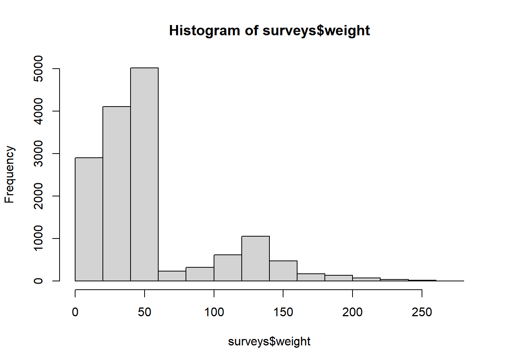
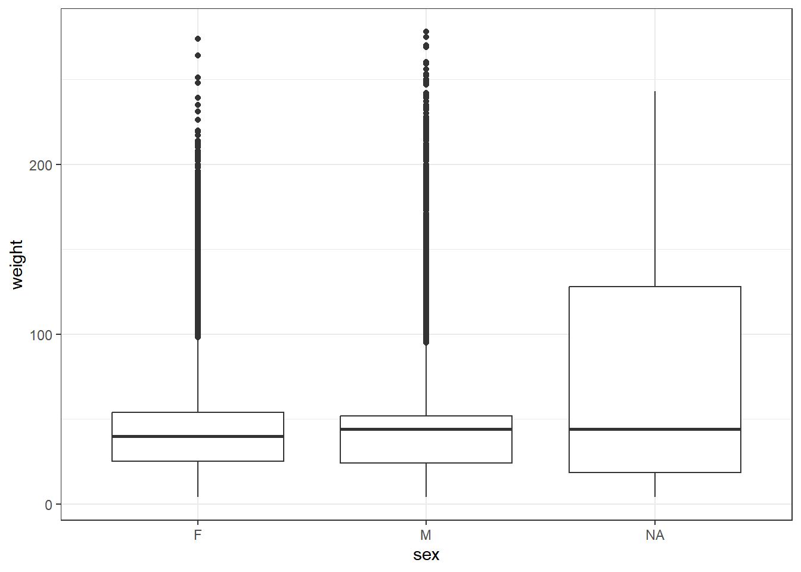
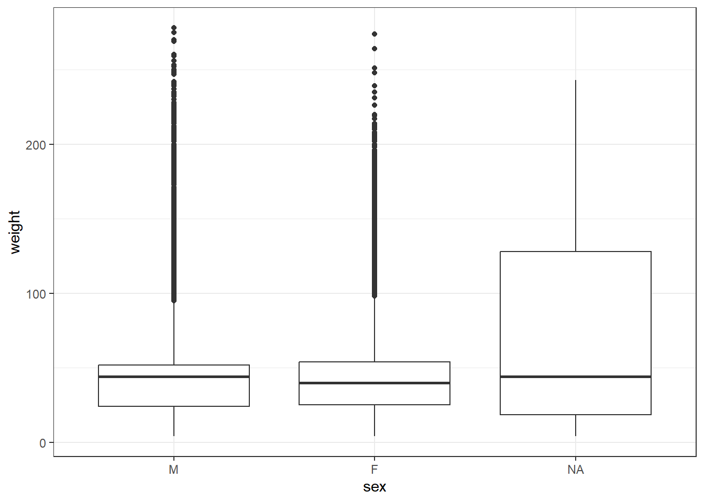

── Attaching core tidyverse packages ──────────────────────── tidyverse 2.0.0 ──
✔ dplyr 1.1.4 ✔ readr 2.1.5
✔ forcats 1.0.1 ✔ stringr 1.6.0
✔ ggplot2 4.0.1 ✔ tibble 3.3.0
✔ lubridate 1.9.4 ✔ tidyr 1.3.1
✔ purrr 1.2.0
── Conflicts ────────────────────────────────────────── tidyverse_conflicts() ──
✖ dplyr::filter() masks stats::filter()
✖ dplyr::lag() masks stats::lag()
ℹ Use the conflicted package (<http://conflicted.r-lib.org/>) to force all conflicts to become errors
Rows: 16878 Columns: 13
── Column specification ────────────────────────────────────────────────────────
Delimiter: ","
chr (6): species_id, sex, genus, species, taxa, plot_type
dbl (7): record_id, month, day, year, plot_id, hindfoot_length, weight
ℹ Use `spec()` to retrieve the full column specification for this data.
ℹ Specify the column types or set `show_col_types = FALSE` to quiet this message.03_explore
Exploring & Understanding Data
We’ve learned how to create visualisations from the surveys data, but what actually is surveys? R commonly stores tabular data in data.frames, and that is how the surveys data is stored. It’s useful to understand how R thinks about, represents, and stores data in order for us to have a productive working relationship with R.
We can check what surveys is by using the class() function:
class(surveys)[1] "spec_tbl_df" "tbl_df" "tbl" "data.frame" This tells us a smaller amount of information than when we used str(), namely that surveys is ultimately a data.frame.
When we’re looking at large or unfamiliar datasets it’s useful to do some quick checks to get an idea of the kind of data we’re working with. For example, we can look at the first and last 6 rows of our data:
head(surveys)# A tibble: 6 × 13
record_id month day year plot_id species_id sex hindfoot_length weight
<dbl> <dbl> <dbl> <dbl> <dbl> <chr> <chr> <dbl> <dbl>
1 1 7 16 1977 2 NL M 32 NA
2 2 7 16 1977 3 NL M 33 NA
3 3 7 16 1977 2 DM F 37 NA
4 4 7 16 1977 7 DM M 36 NA
5 5 7 16 1977 3 DM M 35 NA
6 6 7 16 1977 1 PF M 14 NA
# ℹ 4 more variables: genus <chr>, species <chr>, taxa <chr>, plot_type <chr>tail(surveys)# A tibble: 6 × 13
record_id month day year plot_id species_id sex hindfoot_length weight
<dbl> <dbl> <dbl> <dbl> <dbl> <chr> <chr> <dbl> <dbl>
1 16873 12 5 1989 8 DO M 37 51
2 16874 12 5 1989 16 RM F 18 15
3 16875 12 5 1989 5 RM M 17 9
4 16876 12 5 1989 4 DM M 37 31
5 16877 12 5 1989 11 DM M 37 50
6 16878 12 5 1989 8 DM F 37 42
# ℹ 4 more variables: genus <chr>, species <chr>, taxa <chr>, plot_type <chr>We can get a useful summary of each numeric variable (column) by using summary():
summary(surveys) record_id month day year plot_id
Min. : 1 Min. : 1.000 Min. : 1.0 Min. :1977 Min. : 1.00
1st Qu.: 4220 1st Qu.: 3.000 1st Qu.: 9.0 1st Qu.:1981 1st Qu.: 5.00
Median : 8440 Median : 6.000 Median :15.0 Median :1983 Median :11.00
Mean : 8440 Mean : 6.382 Mean :15.6 Mean :1984 Mean :11.47
3rd Qu.:12659 3rd Qu.: 9.000 3rd Qu.:23.0 3rd Qu.:1987 3rd Qu.:17.00
Max. :16878 Max. :12.000 Max. :31.0 Max. :1989 Max. :24.00
species_id sex hindfoot_length weight
Length:16878 Length:16878 Min. : 6.00 Min. : 4.00
Class :character Class :character 1st Qu.:21.00 1st Qu.: 24.00
Mode :character Mode :character Median :35.00 Median : 42.00
Mean :31.98 Mean : 53.22
3rd Qu.:37.00 3rd Qu.: 53.00
Max. :70.00 Max. :278.00
NA's :2733 NA's :1692
genus species taxa plot_type
Length:16878 Length:16878 Length:16878 Length:16878
Class :character Class :character Class :character Class :character
Mode :character Mode :character Mode :character Mode :character
Let’s take another look at the structure of surveys using str():
str(surveys)spc_tbl_ [16,878 × 13] (S3: spec_tbl_df/tbl_df/tbl/data.frame)
$ record_id : num [1:16878] 1 2 3 4 5 6 7 8 9 10 ...
$ month : num [1:16878] 7 7 7 7 7 7 7 7 7 7 ...
$ day : num [1:16878] 16 16 16 16 16 16 16 16 16 16 ...
$ year : num [1:16878] 1977 1977 1977 1977 1977 ...
$ plot_id : num [1:16878] 2 3 2 7 3 1 2 1 1 6 ...
$ species_id : chr [1:16878] "NL" "NL" "DM" "DM" ...
$ sex : chr [1:16878] "M" "M" "F" "M" ...
$ hindfoot_length: num [1:16878] 32 33 37 36 35 14 NA 37 34 20 ...
$ weight : num [1:16878] NA NA NA NA NA NA NA NA NA NA ...
$ genus : chr [1:16878] "Neotoma" "Neotoma" "Dipodomys" "Dipodomys" ...
$ species : chr [1:16878] "albigula" "albigula" "merriami" "merriami" ...
$ taxa : chr [1:16878] "Rodent" "Rodent" "Rodent" "Rodent" ...
$ plot_type : chr [1:16878] "Control" "Long-term Krat Exclosure" "Control" "Rodent Exclosure" ...
- attr(*, "spec")=
.. cols(
.. record_id = col_double(),
.. month = col_double(),
.. day = col_double(),
.. year = col_double(),
.. plot_id = col_double(),
.. species_id = col_character(),
.. sex = col_character(),
.. hindfoot_length = col_double(),
.. weight = col_double(),
.. genus = col_character(),
.. species = col_character(),
.. taxa = col_character(),
.. plot_type = col_character()
.. )
- attr(*, "problems")=<externalptr> The $ in front of each variable acts as an important operator in R. We can use it to select different columns within a data frame. If we type the name of a data frame followed by a $, RStudio will offer tab completion to select a variable within the data from a list by navigating up and down with the arrow keys and hitting enter, or by clicking on the variable you want.
surveys$year [1] 1977 1977 1977 1977 1977 1977 1977 1977 1977 1977 1977 1977 1977 1977
[15] 1977 1977 1977 1977 1977 1977 1977 1977 1977 1977 1977 1977 1977 1977
[29] 1977 1977 1977 1977 1977 1977 1977 1977 1977 1977 1977 1977 1977 1977
[43] 1977 1977 1977 1977 1977 1977 1977 1977 1977 1977 1977 1977 1977 1977
[57] 1977 1977 1977 1977 1977 1977 1977 1977 1977 1977 1977 1977 1977 1977
[71] 1977 1977 1977 1977 1977 1977 1977 1977 1977 1977 1977 1977 1977 1977
[85] 1977 1977 1977 1977 1977 1977 1977 1977 1977 1977 1977 1977 1977 1977
[99] 1977 1977 1977 1977 1977 1977 1977 1977 1977 1977 1977 1977 1977 1977
[113] 1977 1977 1977 1977 1977 1977 1977 1977 1977 1977 1977 1977 1977 1977
[127] 1977 1977 1977 1977 1977 1977 1977 1977 1977 1977 1977 1977 1977 1977
[141] 1977 1977 1977 1977 1977 1977 1977 1977 1977 1977 1977 1977 1977 1977
[155] 1977 1977 1977 1977 1977 1977 1977 1977 1977 1977 1977 1977 1977 1977
[169] 1977 1977 1977 1977 1977 1977 1977 1977 1977 1977 1977 1977 1977 1977
[183] 1977 1977 1977 1977 1977 1977 1977 1977 1977 1977 1977 1977 1977 1977
[197] 1977 1977 1977 1977 1977 1977 1977 1977 1977 1977 1977 1977 1977 1977
[211] 1977 1977 1977 1977 1977 1977 1977 1977 1977 1977 1977 1977 1977 1977
[225] 1977 1977 1977 1977 1977 1977 1977 1977 1977 1977 1977 1977 1977 1977
[239] 1977 1977 1977 1977 1977 1977 1977 1977 1977 1977 1977 1977 1977 1977
[253] 1977 1977 1977 1977 1977 1977 1977 1977 1977 1977 1977 1977 1977 1977
[267] 1977 1977 1977 1977 1977 1977 1977 1977 1977 1977 1977 1977 1977 1977
[281] 1977 1977 1977 1977 1977 1977 1977 1977 1977 1977 1977 1977 1977 1977
[295] 1977 1977 1977 1977 1977 1977 1977 1977 1977 1977 1977 1977 1977 1977
[309] 1977 1977 1977 1977 1977 1977 1977 1977 1977 1977 1977 1977 1977 1977
[323] 1977 1977 1977 1977 1977 1977 1977 1977 1977 1977 1977 1977 1977 1977
[337] 1977 1977 1977 1977 1977 1977 1977 1977 1977 1977 1977 1977 1977 1977
[351] 1977 1977 1977 1977 1977 1977 1977 1977 1977 1977 1977 1977 1977 1977
[365] 1977 1977 1977 1977 1977 1977 1977 1977 1977 1977 1977 1977 1977 1977
[379] 1977 1977 1977 1977 1977 1977 1977 1977 1977 1977 1977 1977 1977 1977
[393] 1977 1977 1977 1977 1977 1977 1977 1977 1977 1977 1977 1977 1977 1977
[407] 1977 1977 1977 1977 1977 1977 1977 1977 1977 1977 1977 1977 1977 1977
[421] 1977 1977 1977 1977 1977 1977 1977 1977 1977 1977 1977 1977 1977 1977
[435] 1977 1977 1977 1977 1977 1977 1977 1977 1977 1977 1977 1977 1977 1977
[449] 1977 1977 1977 1977 1977 1977 1977 1977 1977 1977 1977 1977 1977 1977
[463] 1977 1977 1977 1977 1977 1977 1977 1977 1977 1977 1977 1977 1977 1977
[477] 1977 1977 1977 1977 1977 1977 1977 1977 1977 1977 1977 1977 1977 1977
[491] 1977 1977 1977 1977 1977 1977 1977 1977 1977 1977 1977 1977 1977 1978
[505] 1978 1978 1978 1978 1978 1978 1978 1978 1978 1978 1978 1978 1978 1978
[519] 1978 1978 1978 1978 1978 1978 1978 1978 1978 1978 1978 1978 1978 1978
[533] 1978 1978 1978 1978 1978 1978 1978 1978 1978 1978 1978 1978 1978 1978
[547] 1978 1978 1978 1978 1978 1978 1978 1978 1978 1978 1978 1978 1978 1978
[561] 1978 1978 1978 1978 1978 1978 1978 1978 1978 1978 1978 1978 1978 1978
[575] 1978 1978 1978 1978 1978 1978 1978 1978 1978 1978 1978 1978 1978 1978
[589] 1978 1978 1978 1978 1978 1978 1978 1978 1978 1978 1978 1978 1978 1978
[603] 1978 1978 1978 1978 1978 1978 1978 1978 1978 1978 1978 1978 1978 1978
[617] 1978 1978 1978 1978 1978 1978 1978 1978 1978 1978 1978 1978 1978 1978
[631] 1978 1978 1978 1978 1978 1978 1978 1978 1978 1978 1978 1978 1978 1978
[645] 1978 1978 1978 1978 1978 1978 1978 1978 1978 1978 1978 1978 1978 1978
[659] 1978 1978 1978 1978 1978 1978 1978 1978 1978 1978 1978 1978 1978 1978
[673] 1978 1978 1978 1978 1978 1978 1978 1978 1978 1978 1978 1978 1978 1978
[687] 1978 1978 1978 1978 1978 1978 1978 1978 1978 1978 1978 1978 1978 1978
[701] 1978 1978 1978 1978 1978 1978 1978 1978 1978 1978 1978 1978 1978 1978
[715] 1978 1978 1978 1978 1978 1978 1978 1978 1978 1978 1978 1978 1978 1978
[729] 1978 1978 1978 1978 1978 1978 1978 1978 1978 1978 1978 1978 1978 1978
[743] 1978 1978 1978 1978 1978 1978 1978 1978 1978 1978 1978 1978 1978 1978
[757] 1978 1978 1978 1978 1978 1978 1978 1978 1978 1978 1978 1978 1978 1978
[771] 1978 1978 1978 1978 1978 1978 1978 1978 1978 1978 1978 1978 1978 1978
[785] 1978 1978 1978 1978 1978 1978 1978 1978 1978 1978 1978 1978 1978 1978
[799] 1978 1978 1978 1978 1978 1978 1978 1978 1978 1978 1978 1978 1978 1978
[813] 1978 1978 1978 1978 1978 1978 1978 1978 1978 1978 1978 1978 1978 1978
[827] 1978 1978 1978 1978 1978 1978 1978 1978 1978 1978 1978 1978 1978 1978
[841] 1978 1978 1978 1978 1978 1978 1978 1978 1978 1978 1978 1978 1978 1978
[855] 1978 1978 1978 1978 1978 1978 1978 1978 1978 1978 1978 1978 1978 1978
[869] 1978 1978 1978 1978 1978 1978 1978 1978 1978 1978 1978 1978 1978 1978
[883] 1978 1978 1978 1978 1978 1978 1978 1978 1978 1978 1978 1978 1978 1978
[897] 1978 1978 1978 1978 1978 1978 1978 1978 1978 1978 1978 1978 1978 1978
[911] 1978 1978 1978 1978 1978 1978 1978 1978 1978 1978 1978 1978 1978 1978
[925] 1978 1978 1978 1978 1978 1978 1978 1978 1978 1978 1978 1978 1978 1978
[939] 1978 1978 1978 1978 1978 1978 1978 1978 1978 1978 1978 1978 1978 1978
[953] 1978 1978 1978 1978 1978 1978 1978 1978 1978 1978 1978 1978 1978 1978
[967] 1978 1978 1978 1978 1978 1978 1978 1978 1978 1978 1978 1978 1978 1978
[981] 1978 1978 1978 1978 1978 1978 1978 1978 1978 1978 1978 1978 1978 1978
[995] 1978 1978 1978 1978 1978 1978 1978 1978 1978 1978 1978 1978 1978 1978
[1009] 1978 1978 1978 1978 1978 1978 1978 1978 1978 1978 1978 1978 1978 1978
[1023] 1978 1978 1978 1978 1978 1978 1978 1978 1978 1978 1978 1978 1978 1978
[1037] 1978 1978 1978 1978 1978 1978 1978 1978 1978 1978 1978 1978 1978 1978
[1051] 1978 1978 1978 1978 1978 1978 1978 1978 1978 1978 1978 1978 1978 1978
[1065] 1978 1978 1978 1978 1978 1978 1978 1978 1978 1978 1978 1978 1978 1978
[1079] 1978 1978 1978 1978 1978 1978 1978 1978 1978 1978 1978 1978 1978 1978
[1093] 1978 1978 1978 1978 1978 1978 1978 1978 1978 1978 1978 1978 1978 1978
[1107] 1978 1978 1978 1978 1978 1978 1978 1978 1978 1978 1978 1978 1978 1978
[1121] 1978 1978 1978 1978 1978 1978 1978 1978 1978 1978 1978 1978 1978 1978
[1135] 1978 1978 1978 1978 1978 1978 1978 1978 1978 1978 1978 1978 1978 1978
[1149] 1978 1978 1978 1978 1978 1978 1978 1978 1978 1978 1978 1978 1978 1978
[1163] 1978 1978 1978 1978 1978 1978 1978 1978 1978 1978 1978 1978 1978 1978
[1177] 1978 1978 1978 1978 1978 1978 1978 1978 1978 1978 1978 1978 1978 1978
[1191] 1978 1978 1978 1978 1978 1978 1978 1978 1978 1978 1978 1978 1978 1978
[1205] 1978 1978 1978 1978 1978 1978 1978 1978 1978 1978 1978 1978 1978 1978
[1219] 1978 1978 1978 1978 1978 1978 1978 1978 1978 1978 1978 1978 1978 1978
[1233] 1978 1978 1978 1978 1978 1978 1978 1978 1978 1978 1978 1978 1978 1978
[1247] 1978 1978 1978 1978 1978 1978 1978 1978 1978 1978 1978 1978 1978 1978
[1261] 1978 1978 1978 1978 1978 1978 1978 1978 1978 1978 1978 1978 1978 1978
[1275] 1978 1978 1978 1978 1978 1978 1978 1978 1978 1978 1978 1978 1978 1978
[1289] 1978 1978 1978 1978 1978 1978 1978 1978 1978 1978 1978 1978 1978 1978
[1303] 1978 1978 1978 1978 1978 1978 1978 1978 1978 1978 1978 1978 1978 1978
[1317] 1978 1978 1978 1978 1978 1978 1978 1978 1978 1978 1978 1978 1978 1978
[1331] 1978 1978 1978 1978 1978 1978 1978 1978 1978 1978 1978 1978 1978 1978
[1345] 1978 1978 1978 1978 1978 1978 1978 1978 1978 1978 1978 1978 1978 1978
[1359] 1978 1978 1978 1978 1978 1978 1978 1978 1978 1978 1978 1978 1978 1978
[1373] 1978 1978 1978 1978 1978 1978 1978 1978 1978 1978 1978 1978 1978 1978
[1387] 1978 1978 1978 1978 1978 1978 1978 1978 1978 1978 1978 1978 1978 1978
[1401] 1978 1978 1978 1978 1978 1978 1978 1978 1978 1978 1978 1978 1978 1978
[1415] 1978 1978 1978 1978 1978 1978 1978 1978 1978 1978 1978 1978 1978 1978
[1429] 1978 1978 1978 1978 1978 1978 1978 1978 1978 1978 1978 1978 1978 1978
[1443] 1978 1978 1978 1978 1978 1978 1978 1978 1978 1978 1978 1978 1978 1978
[1457] 1978 1978 1978 1978 1978 1978 1978 1978 1978 1978 1978 1978 1978 1978
[1471] 1978 1978 1978 1978 1978 1978 1978 1978 1978 1978 1978 1978 1978 1978
[1485] 1978 1978 1978 1978 1978 1978 1978 1978 1978 1978 1978 1978 1978 1978
[1499] 1978 1978 1978 1978 1978 1978 1978 1978 1978 1978 1978 1978 1978 1978
[1513] 1978 1978 1978 1978 1978 1978 1978 1978 1978 1978 1978 1978 1978 1978
[1527] 1978 1978 1978 1978 1978 1978 1978 1978 1978 1978 1978 1978 1978 1978
[1541] 1978 1978 1978 1978 1978 1978 1978 1978 1978 1978 1978 1979 1979 1979
[1555] 1979 1979 1979 1979 1979 1979 1979 1979 1979 1979 1979 1979 1979 1979
[1569] 1979 1979 1979 1979 1979 1979 1979 1979 1979 1979 1979 1979 1979 1979
[1583] 1979 1979 1979 1979 1979 1979 1979 1979 1979 1979 1979 1979 1979 1979
[1597] 1979 1979 1979 1979 1979 1979 1979 1979 1979 1979 1979 1979 1979 1979
[1611] 1979 1979 1979 1979 1979 1979 1979 1979 1979 1979 1979 1979 1979 1979
[1625] 1979 1979 1979 1979 1979 1979 1979 1979 1979 1979 1979 1979 1979 1979
[1639] 1979 1979 1979 1979 1979 1979 1979 1979 1979 1979 1979 1979 1979 1979
[1653] 1979 1979 1979 1979 1979 1979 1979 1979 1979 1979 1979 1979 1979 1979
[1667] 1979 1979 1979 1979 1979 1979 1979 1979 1979 1979 1979 1979 1979 1979
[1681] 1979 1979 1979 1979 1979 1979 1979 1979 1979 1979 1979 1979 1979 1979
[1695] 1979 1979 1979 1979 1979 1979 1979 1979 1979 1979 1979 1979 1979 1979
[1709] 1979 1979 1979 1979 1979 1979 1979 1979 1979 1979 1979 1979 1979 1979
[1723] 1979 1979 1979 1979 1979 1979 1979 1979 1979 1979 1979 1979 1979 1979
[1737] 1979 1979 1979 1979 1979 1979 1979 1979 1979 1979 1979 1979 1979 1979
[1751] 1979 1979 1979 1979 1979 1979 1979 1979 1979 1979 1979 1979 1979 1979
[1765] 1979 1979 1979 1979 1979 1979 1979 1979 1979 1979 1979 1979 1979 1979
[1779] 1979 1979 1979 1979 1979 1979 1979 1979 1979 1979 1979 1979 1979 1979
[1793] 1979 1979 1979 1979 1979 1979 1979 1979 1979 1979 1979 1979 1979 1979
[1807] 1979 1979 1979 1979 1979 1979 1979 1979 1979 1979 1979 1979 1979 1979
[1821] 1979 1979 1979 1979 1979 1979 1979 1979 1979 1979 1979 1979 1979 1979
[1835] 1979 1979 1979 1979 1979 1979 1979 1979 1979 1979 1979 1979 1979 1979
[1849] 1979 1979 1979 1979 1979 1979 1979 1979 1979 1979 1979 1979 1979 1979
[1863] 1979 1979 1979 1979 1979 1979 1979 1979 1979 1979 1979 1979 1979 1979
[1877] 1979 1979 1979 1979 1979 1979 1979 1979 1979 1979 1979 1979 1979 1979
[1891] 1979 1979 1979 1979 1979 1979 1979 1979 1979 1979 1979 1979 1979 1979
[1905] 1979 1979 1979 1979 1979 1979 1979 1979 1979 1979 1979 1979 1979 1979
[1919] 1979 1979 1979 1979 1979 1979 1979 1979 1979 1979 1979 1979 1979 1979
[1933] 1979 1979 1979 1979 1979 1979 1979 1979 1979 1979 1979 1979 1979 1979
[1947] 1979 1979 1979 1979 1979 1979 1979 1979 1979 1979 1979 1979 1979 1979
[1961] 1979 1979 1979 1979 1979 1979 1979 1979 1979 1979 1979 1979 1979 1979
[1975] 1979 1979 1979 1979 1979 1979 1979 1979 1979 1979 1979 1979 1979 1979
[1989] 1979 1979 1979 1979 1979 1979 1979 1979 1979 1979 1979 1979 1979 1979
[2003] 1979 1979 1979 1979 1979 1979 1979 1979 1979 1979 1979 1979 1979 1979
[2017] 1979 1979 1979 1979 1979 1979 1979 1979 1979 1979 1979 1979 1979 1979
[2031] 1979 1979 1979 1979 1979 1979 1979 1979 1979 1979 1979 1979 1979 1979
[2045] 1979 1979 1979 1979 1979 1979 1979 1979 1979 1979 1979 1979 1979 1979
[2059] 1979 1979 1979 1979 1979 1979 1979 1979 1979 1979 1979 1979 1979 1979
[2073] 1979 1979 1979 1979 1979 1979 1979 1979 1979 1979 1979 1979 1979 1979
[2087] 1979 1979 1979 1979 1979 1979 1979 1979 1979 1979 1979 1979 1979 1979
[2101] 1979 1979 1979 1979 1979 1979 1979 1979 1979 1979 1979 1979 1979 1979
[2115] 1979 1979 1979 1979 1979 1979 1979 1979 1979 1979 1979 1979 1979 1979
[2129] 1979 1979 1979 1979 1979 1979 1979 1979 1979 1979 1979 1979 1979 1979
[2143] 1979 1979 1979 1979 1979 1979 1979 1979 1979 1979 1979 1979 1979 1979
[2157] 1979 1979 1979 1979 1979 1979 1979 1979 1979 1979 1979 1979 1979 1979
[2171] 1979 1979 1979 1979 1979 1979 1979 1979 1979 1979 1979 1979 1979 1979
[2185] 1979 1979 1979 1979 1979 1979 1979 1979 1979 1979 1979 1979 1979 1979
[2199] 1979 1979 1979 1979 1979 1979 1979 1979 1979 1979 1979 1979 1979 1979
[2213] 1979 1979 1979 1979 1979 1979 1979 1979 1979 1979 1979 1979 1979 1979
[2227] 1979 1979 1979 1979 1979 1979 1979 1979 1979 1979 1979 1979 1979 1979
[2241] 1979 1979 1979 1979 1979 1979 1979 1979 1979 1979 1979 1979 1979 1979
[2255] 1979 1979 1979 1979 1979 1979 1979 1979 1979 1979 1979 1979 1979 1979
[2269] 1979 1979 1980 1980 1980 1980 1980 1980 1980 1980 1980 1980 1980 1980
[2283] 1980 1980 1980 1980 1980 1980 1980 1980 1980 1980 1980 1980 1980 1980
[2297] 1980 1980 1980 1980 1980 1980 1980 1980 1980 1980 1980 1980 1980 1980
[2311] 1980 1980 1980 1980 1980 1980 1980 1980 1980 1980 1980 1980 1980 1980
[2325] 1980 1980 1980 1980 1980 1980 1980 1980 1980 1980 1980 1980 1980 1980
[2339] 1980 1980 1980 1980 1980 1980 1980 1980 1980 1980 1980 1980 1980 1980
[2353] 1980 1980 1980 1980 1980 1980 1980 1980 1980 1980 1980 1980 1980 1980
[2367] 1980 1980 1980 1980 1980 1980 1980 1980 1980 1980 1980 1980 1980 1980
[2381] 1980 1980 1980 1980 1980 1980 1980 1980 1980 1980 1980 1980 1980 1980
[2395] 1980 1980 1980 1980 1980 1980 1980 1980 1980 1980 1980 1980 1980 1980
[2409] 1980 1980 1980 1980 1980 1980 1980 1980 1980 1980 1980 1980 1980 1980
[2423] 1980 1980 1980 1980 1980 1980 1980 1980 1980 1980 1980 1980 1980 1980
[2437] 1980 1980 1980 1980 1980 1980 1980 1980 1980 1980 1980 1980 1980 1980
[2451] 1980 1980 1980 1980 1980 1980 1980 1980 1980 1980 1980 1980 1980 1980
[2465] 1980 1980 1980 1980 1980 1980 1980 1980 1980 1980 1980 1980 1980 1980
[2479] 1980 1980 1980 1980 1980 1980 1980 1980 1980 1980 1980 1980 1980 1980
[2493] 1980 1980 1980 1980 1980 1980 1980 1980 1980 1980 1980 1980 1980 1980
[2507] 1980 1980 1980 1980 1980 1980 1980 1980 1980 1980 1980 1980 1980 1980
[2521] 1980 1980 1980 1980 1980 1980 1980 1980 1980 1980 1980 1980 1980 1980
[2535] 1980 1980 1980 1980 1980 1980 1980 1980 1980 1980 1980 1980 1980 1980
[2549] 1980 1980 1980 1980 1980 1980 1980 1980 1980 1980 1980 1980 1980 1980
[2563] 1980 1980 1980 1980 1980 1980 1980 1980 1980 1980 1980 1980 1980 1980
[2577] 1980 1980 1980 1980 1980 1980 1980 1980 1980 1980 1980 1980 1980 1980
[2591] 1980 1980 1980 1980 1980 1980 1980 1980 1980 1980 1980 1980 1980 1980
[2605] 1980 1980 1980 1980 1980 1980 1980 1980 1980 1980 1980 1980 1980 1980
[2619] 1980 1980 1980 1980 1980 1980 1980 1980 1980 1980 1980 1980 1980 1980
[2633] 1980 1980 1980 1980 1980 1980 1980 1980 1980 1980 1980 1980 1980 1980
[2647] 1980 1980 1980 1980 1980 1980 1980 1980 1980 1980 1980 1980 1980 1980
[2661] 1980 1980 1980 1980 1980 1980 1980 1980 1980 1980 1980 1980 1980 1980
[2675] 1980 1980 1980 1980 1980 1980 1980 1980 1980 1980 1980 1980 1980 1980
[2689] 1980 1980 1980 1980 1980 1980 1980 1980 1980 1980 1980 1980 1980 1980
[2703] 1980 1980 1980 1980 1980 1980 1980 1980 1980 1980 1980 1980 1980 1980
[2717] 1980 1980 1980 1980 1980 1980 1980 1980 1980 1980 1980 1980 1980 1980
[2731] 1980 1980 1980 1980 1980 1980 1980 1980 1980 1980 1980 1980 1980 1980
[2745] 1980 1980 1980 1980 1980 1980 1980 1980 1980 1980 1980 1980 1980 1980
[2759] 1980 1980 1980 1980 1980 1980 1980 1980 1980 1980 1980 1980 1980 1980
[2773] 1980 1980 1980 1980 1980 1980 1980 1980 1980 1980 1980 1980 1980 1980
[2787] 1980 1980 1980 1980 1980 1980 1980 1980 1980 1980 1980 1980 1980 1980
[2801] 1980 1980 1980 1980 1980 1980 1980 1980 1980 1980 1980 1980 1980 1980
[2815] 1980 1980 1980 1980 1980 1980 1980 1980 1980 1980 1980 1980 1980 1980
[2829] 1980 1980 1980 1980 1980 1980 1980 1980 1980 1980 1980 1980 1980 1980
[2843] 1980 1980 1980 1980 1980 1980 1980 1980 1980 1980 1980 1980 1980 1980
[2857] 1980 1980 1980 1980 1980 1980 1980 1980 1980 1980 1980 1980 1980 1980
[2871] 1980 1980 1980 1980 1980 1980 1980 1980 1980 1980 1980 1980 1980 1980
[2885] 1980 1980 1980 1980 1980 1980 1980 1980 1980 1980 1980 1980 1980 1980
[2899] 1980 1980 1980 1980 1980 1980 1980 1980 1980 1980 1980 1980 1980 1980
[2913] 1980 1980 1980 1980 1980 1980 1980 1980 1980 1980 1980 1980 1980 1980
[2927] 1980 1980 1980 1980 1980 1980 1980 1980 1980 1980 1980 1980 1980 1980
[2941] 1980 1980 1980 1980 1980 1980 1980 1980 1980 1980 1980 1980 1980 1980
[2955] 1980 1980 1980 1980 1980 1980 1980 1980 1980 1980 1980 1980 1980 1980
[2969] 1980 1980 1980 1980 1980 1980 1980 1980 1980 1980 1980 1980 1980 1980
[2983] 1980 1980 1980 1980 1980 1980 1980 1980 1980 1980 1980 1980 1980 1980
[2997] 1980 1980 1980 1980 1980 1980 1980 1980 1980 1980 1980 1980 1980 1980
[3011] 1980 1980 1980 1980 1980 1980 1980 1980 1980 1980 1980 1980 1980 1980
[3025] 1980 1980 1980 1980 1980 1980 1980 1980 1980 1980 1980 1980 1980 1980
[3039] 1980 1980 1980 1980 1980 1980 1980 1980 1980 1980 1980 1980 1980 1980
[3053] 1980 1980 1980 1980 1980 1980 1980 1980 1980 1980 1980 1980 1980 1980
[3067] 1980 1980 1980 1980 1980 1980 1980 1980 1980 1980 1980 1980 1980 1980
[3081] 1980 1980 1980 1980 1980 1980 1980 1980 1980 1980 1980 1980 1980 1980
[3095] 1980 1980 1980 1980 1980 1980 1980 1980 1980 1980 1980 1980 1980 1980
[3109] 1980 1980 1980 1980 1980 1980 1980 1980 1980 1980 1980 1980 1980 1980
[3123] 1980 1980 1980 1980 1980 1980 1980 1980 1980 1980 1980 1980 1980 1980
[3137] 1980 1980 1980 1980 1980 1980 1980 1980 1980 1980 1980 1980 1980 1980
[3151] 1980 1980 1980 1980 1980 1980 1980 1980 1980 1980 1980 1980 1980 1980
[3165] 1980 1980 1980 1980 1980 1980 1980 1980 1980 1980 1980 1980 1980 1980
[3179] 1980 1980 1980 1980 1980 1980 1980 1980 1980 1980 1980 1980 1980 1980
[3193] 1980 1980 1980 1980 1980 1980 1980 1980 1980 1980 1980 1980 1980 1980
[3207] 1980 1980 1980 1980 1980 1980 1980 1980 1980 1980 1980 1980 1980 1980
[3221] 1980 1980 1980 1980 1980 1980 1980 1980 1980 1980 1980 1980 1980 1980
[3235] 1980 1980 1980 1980 1980 1980 1980 1980 1980 1980 1980 1980 1980 1980
[3249] 1980 1980 1980 1980 1980 1980 1980 1980 1980 1980 1980 1980 1980 1980
[3263] 1980 1980 1980 1980 1980 1980 1980 1980 1980 1980 1980 1980 1980 1980
[3277] 1980 1980 1980 1980 1980 1980 1980 1980 1980 1980 1980 1980 1980 1980
[3291] 1980 1980 1980 1980 1980 1980 1980 1980 1980 1980 1980 1980 1980 1980
[3305] 1980 1980 1980 1980 1980 1980 1980 1980 1980 1980 1980 1980 1980 1980
[3319] 1980 1980 1980 1980 1980 1980 1980 1980 1980 1980 1980 1980 1980 1980
[3333] 1980 1980 1980 1980 1980 1980 1980 1980 1980 1980 1980 1980 1980 1980
[3347] 1980 1980 1980 1980 1980 1980 1980 1980 1980 1980 1980 1980 1980 1980
[3361] 1980 1980 1980 1980 1980 1980 1980 1980 1980 1980 1980 1980 1980 1980
[3375] 1980 1980 1980 1980 1980 1980 1980 1980 1980 1980 1980 1980 1980 1980
[3389] 1980 1980 1980 1980 1980 1980 1980 1980 1980 1980 1980 1980 1980 1980
[3403] 1980 1980 1980 1980 1980 1980 1980 1980 1980 1980 1980 1980 1980 1980
[3417] 1980 1980 1980 1980 1980 1980 1980 1980 1980 1980 1980 1980 1980 1980
[3431] 1980 1980 1980 1980 1980 1980 1980 1980 1980 1980 1980 1980 1980 1980
[3445] 1980 1980 1980 1980 1980 1980 1980 1980 1980 1980 1980 1980 1980 1980
[3459] 1980 1980 1980 1980 1980 1980 1980 1980 1980 1980 1980 1980 1980 1980
[3473] 1980 1980 1980 1980 1980 1980 1980 1980 1980 1980 1980 1980 1980 1980
[3487] 1980 1980 1980 1980 1980 1980 1980 1980 1980 1980 1980 1980 1980 1980
[3501] 1980 1980 1980 1980 1980 1980 1980 1980 1980 1980 1980 1980 1980 1980
[3515] 1980 1980 1980 1980 1980 1980 1980 1980 1980 1980 1980 1980 1980 1980
[3529] 1980 1980 1980 1980 1980 1980 1980 1980 1980 1980 1980 1980 1980 1980
[3543] 1980 1980 1980 1980 1980 1980 1980 1980 1980 1980 1980 1980 1980 1980
[3557] 1980 1980 1980 1980 1980 1980 1980 1980 1980 1980 1980 1980 1980 1980
[3571] 1980 1980 1980 1980 1980 1980 1980 1980 1980 1980 1980 1980 1980 1980
[3585] 1980 1980 1980 1980 1980 1980 1980 1980 1980 1980 1980 1980 1980 1980
[3599] 1980 1980 1980 1980 1980 1980 1980 1980 1980 1980 1980 1980 1980 1980
[3613] 1980 1980 1980 1980 1980 1980 1980 1980 1980 1980 1980 1980 1980 1980
[3627] 1980 1980 1980 1980 1980 1980 1980 1980 1980 1980 1980 1980 1980 1980
[3641] 1980 1980 1980 1980 1980 1980 1980 1980 1980 1980 1980 1980 1980 1980
[3655] 1980 1980 1980 1980 1980 1980 1980 1980 1980 1980 1980 1980 1980 1980
[3669] 1980 1980 1980 1980 1980 1980 1980 1980 1980 1980 1980 1980 1980 1980
[3683] 1980 1980 1980 1981 1981 1981 1981 1981 1981 1981 1981 1981 1981 1981
[3697] 1981 1981 1981 1981 1981 1981 1981 1981 1981 1981 1981 1981 1981 1981
[3711] 1981 1981 1981 1981 1981 1981 1981 1981 1981 1981 1981 1981 1981 1981
[3725] 1981 1981 1981 1981 1981 1981 1981 1981 1981 1981 1981 1981 1981 1981
[3739] 1981 1981 1981 1981 1981 1981 1981 1981 1981 1981 1981 1981 1981 1981
[3753] 1981 1981 1981 1981 1981 1981 1981 1981 1981 1981 1981 1981 1981 1981
[3767] 1981 1981 1981 1981 1981 1981 1981 1981 1981 1981 1981 1981 1981 1981
[3781] 1981 1981 1981 1981 1981 1981 1981 1981 1981 1981 1981 1981 1981 1981
[3795] 1981 1981 1981 1981 1981 1981 1981 1981 1981 1981 1981 1981 1981 1981
[3809] 1981 1981 1981 1981 1981 1981 1981 1981 1981 1981 1981 1981 1981 1981
[3823] 1981 1981 1981 1981 1981 1981 1981 1981 1981 1981 1981 1981 1981 1981
[3837] 1981 1981 1981 1981 1981 1981 1981 1981 1981 1981 1981 1981 1981 1981
[3851] 1981 1981 1981 1981 1981 1981 1981 1981 1981 1981 1981 1981 1981 1981
[3865] 1981 1981 1981 1981 1981 1981 1981 1981 1981 1981 1981 1981 1981 1981
[3879] 1981 1981 1981 1981 1981 1981 1981 1981 1981 1981 1981 1981 1981 1981
[3893] 1981 1981 1981 1981 1981 1981 1981 1981 1981 1981 1981 1981 1981 1981
[3907] 1981 1981 1981 1981 1981 1981 1981 1981 1981 1981 1981 1981 1981 1981
[3921] 1981 1981 1981 1981 1981 1981 1981 1981 1981 1981 1981 1981 1981 1981
[3935] 1981 1981 1981 1981 1981 1981 1981 1981 1981 1981 1981 1981 1981 1981
[3949] 1981 1981 1981 1981 1981 1981 1981 1981 1981 1981 1981 1981 1981 1981
[3963] 1981 1981 1981 1981 1981 1981 1981 1981 1981 1981 1981 1981 1981 1981
[3977] 1981 1981 1981 1981 1981 1981 1981 1981 1981 1981 1981 1981 1981 1981
[3991] 1981 1981 1981 1981 1981 1981 1981 1981 1981 1981 1981 1981 1981 1981
[4005] 1981 1981 1981 1981 1981 1981 1981 1981 1981 1981 1981 1981 1981 1981
[4019] 1981 1981 1981 1981 1981 1981 1981 1981 1981 1981 1981 1981 1981 1981
[4033] 1981 1981 1981 1981 1981 1981 1981 1981 1981 1981 1981 1981 1981 1981
[4047] 1981 1981 1981 1981 1981 1981 1981 1981 1981 1981 1981 1981 1981 1981
[4061] 1981 1981 1981 1981 1981 1981 1981 1981 1981 1981 1981 1981 1981 1981
[4075] 1981 1981 1981 1981 1981 1981 1981 1981 1981 1981 1981 1981 1981 1981
[4089] 1981 1981 1981 1981 1981 1981 1981 1981 1981 1981 1981 1981 1981 1981
[4103] 1981 1981 1981 1981 1981 1981 1981 1981 1981 1981 1981 1981 1981 1981
[4117] 1981 1981 1981 1981 1981 1981 1981 1981 1981 1981 1981 1981 1981 1981
[4131] 1981 1981 1981 1981 1981 1981 1981 1981 1981 1981 1981 1981 1981 1981
[4145] 1981 1981 1981 1981 1981 1981 1981 1981 1981 1981 1981 1981 1981 1981
[4159] 1981 1981 1981 1981 1981 1981 1981 1981 1981 1981 1981 1981 1981 1981
[4173] 1981 1981 1981 1981 1981 1981 1981 1981 1981 1981 1981 1981 1981 1981
[4187] 1981 1981 1981 1981 1981 1981 1981 1981 1981 1981 1981 1981 1981 1981
[4201] 1981 1981 1981 1981 1981 1981 1981 1981 1981 1981 1981 1981 1981 1981
[4215] 1981 1981 1981 1981 1981 1981 1981 1981 1981 1981 1981 1981 1981 1981
[4229] 1981 1981 1981 1981 1981 1981 1981 1981 1981 1981 1981 1981 1981 1981
[4243] 1981 1981 1981 1981 1981 1981 1981 1981 1981 1981 1981 1981 1981 1981
[4257] 1981 1981 1981 1981 1981 1981 1981 1981 1981 1981 1981 1981 1981 1981
[4271] 1981 1981 1981 1981 1981 1981 1981 1981 1981 1981 1981 1981 1981 1981
[4285] 1981 1981 1981 1981 1981 1981 1981 1981 1981 1981 1981 1981 1981 1981
[4299] 1981 1981 1981 1981 1981 1981 1981 1981 1981 1981 1981 1981 1981 1981
[4313] 1981 1981 1981 1981 1981 1981 1981 1981 1981 1981 1981 1981 1981 1981
[4327] 1981 1981 1981 1981 1981 1981 1981 1981 1981 1981 1981 1981 1981 1981
[4341] 1981 1981 1981 1981 1981 1981 1981 1981 1981 1981 1981 1981 1981 1981
[4355] 1981 1981 1981 1981 1981 1981 1981 1981 1981 1981 1981 1981 1981 1981
[4369] 1981 1981 1981 1981 1981 1981 1981 1981 1981 1981 1981 1981 1981 1981
[4383] 1981 1981 1981 1981 1981 1981 1981 1981 1981 1981 1981 1981 1981 1981
[4397] 1981 1981 1981 1981 1981 1981 1981 1981 1981 1981 1981 1981 1981 1981
[4411] 1981 1981 1981 1981 1981 1981 1981 1981 1981 1981 1981 1981 1981 1981
[4425] 1981 1981 1981 1981 1981 1981 1981 1981 1981 1981 1981 1981 1981 1981
[4439] 1981 1981 1981 1981 1981 1981 1981 1981 1981 1981 1981 1981 1981 1981
[4453] 1981 1981 1981 1981 1981 1981 1981 1981 1981 1981 1981 1981 1981 1981
[4467] 1981 1981 1981 1981 1981 1981 1981 1981 1981 1981 1981 1981 1981 1981
[4481] 1981 1981 1981 1981 1981 1981 1981 1981 1981 1981 1981 1981 1981 1981
[4495] 1981 1981 1981 1981 1981 1981 1981 1981 1981 1981 1981 1981 1981 1981
[4509] 1981 1981 1981 1981 1981 1981 1981 1981 1981 1981 1981 1981 1981 1981
[4523] 1981 1981 1981 1981 1981 1981 1981 1981 1981 1981 1981 1981 1981 1981
[4537] 1981 1981 1981 1981 1981 1981 1981 1981 1981 1981 1981 1981 1981 1981
[4551] 1981 1981 1981 1981 1981 1981 1981 1981 1981 1981 1981 1981 1981 1981
[4565] 1981 1981 1981 1981 1981 1981 1981 1981 1981 1981 1981 1981 1981 1981
[4579] 1981 1981 1981 1981 1981 1981 1981 1981 1981 1981 1981 1981 1981 1981
[4593] 1981 1981 1981 1981 1981 1981 1981 1981 1981 1981 1981 1981 1981 1981
[4607] 1981 1981 1981 1981 1981 1981 1981 1981 1981 1981 1981 1981 1981 1981
[4621] 1981 1981 1981 1981 1981 1981 1981 1981 1981 1981 1981 1981 1981 1981
[4635] 1981 1981 1981 1981 1981 1981 1981 1981 1981 1981 1981 1981 1981 1981
[4649] 1981 1981 1981 1981 1981 1981 1981 1981 1981 1981 1981 1981 1981 1981
[4663] 1981 1981 1981 1981 1981 1981 1981 1981 1981 1981 1981 1981 1981 1981
[4677] 1981 1981 1981 1981 1981 1981 1981 1981 1981 1981 1981 1981 1981 1981
[4691] 1981 1981 1981 1981 1981 1981 1981 1981 1981 1981 1981 1981 1981 1981
[4705] 1981 1981 1981 1981 1981 1981 1981 1981 1981 1981 1981 1981 1981 1981
[4719] 1981 1981 1981 1981 1981 1981 1981 1981 1981 1981 1981 1981 1981 1981
[4733] 1981 1981 1981 1981 1981 1981 1981 1981 1981 1981 1981 1981 1981 1981
[4747] 1981 1981 1981 1981 1981 1981 1981 1981 1981 1981 1981 1981 1981 1981
[4761] 1981 1981 1981 1981 1981 1981 1981 1981 1981 1981 1981 1981 1981 1981
[4775] 1981 1981 1981 1981 1981 1981 1981 1981 1981 1981 1981 1981 1981 1981
[4789] 1981 1981 1981 1981 1981 1981 1981 1981 1981 1981 1981 1981 1981 1981
[4803] 1981 1981 1981 1981 1981 1981 1981 1981 1981 1981 1981 1981 1981 1981
[4817] 1981 1981 1981 1981 1981 1981 1981 1981 1981 1981 1981 1981 1981 1981
[4831] 1981 1981 1981 1981 1981 1981 1981 1981 1981 1981 1981 1981 1981 1981
[4845] 1981 1981 1981 1981 1981 1981 1981 1981 1981 1981 1981 1981 1981 1981
[4859] 1981 1981 1981 1981 1981 1981 1981 1981 1981 1981 1981 1981 1981 1981
[4873] 1981 1981 1981 1981 1981 1981 1981 1981 1981 1981 1981 1981 1981 1981
[4887] 1981 1981 1981 1981 1981 1981 1981 1981 1981 1981 1981 1981 1981 1981
[4901] 1981 1981 1981 1981 1981 1981 1981 1981 1981 1981 1981 1981 1981 1981
[4915] 1981 1981 1981 1981 1981 1981 1981 1981 1981 1981 1981 1981 1981 1981
[4929] 1981 1981 1981 1981 1981 1981 1981 1981 1981 1981 1981 1981 1981 1981
[4943] 1981 1981 1981 1981 1981 1981 1981 1981 1981 1981 1981 1981 1981 1981
[4957] 1981 1981 1981 1981 1981 1981 1981 1981 1981 1981 1981 1981 1981 1981
[4971] 1981 1981 1981 1981 1981 1981 1981 1981 1981 1981 1981 1981 1981 1981
[4985] 1981 1981 1981 1981 1981 1981 1981 1981 1981 1981 1981 1981 1981 1981
[4999] 1981 1981 1981 1981 1981 1981 1981 1981 1981 1981 1981 1981 1981 1981
[5013] 1981 1981 1981 1981 1981 1981 1981 1981 1981 1981 1981 1981 1981 1981
[5027] 1981 1981 1981 1981 1981 1981 1981 1981 1981 1981 1981 1981 1981 1981
[5041] 1981 1981 1981 1981 1981 1981 1981 1981 1981 1981 1981 1981 1981 1981
[5055] 1981 1981 1981 1981 1981 1981 1981 1981 1981 1981 1981 1981 1981 1981
[5069] 1981 1981 1981 1981 1981 1981 1981 1981 1981 1981 1981 1981 1981 1981
[5083] 1981 1981 1981 1981 1981 1981 1981 1981 1981 1981 1981 1981 1981 1981
[5097] 1981 1981 1981 1981 1981 1981 1981 1981 1981 1981 1981 1981 1981 1981
[5111] 1981 1981 1981 1981 1981 1981 1981 1981 1981 1981 1981 1981 1981 1981
[5125] 1981 1981 1981 1981 1981 1981 1981 1981 1981 1981 1981 1981 1981 1981
[5139] 1981 1981 1981 1981 1981 1981 1981 1981 1981 1981 1981 1981 1981 1981
[5153] 1981 1981 1981 1981 1981 1982 1982 1982 1982 1982 1982 1982 1982 1982
[5167] 1982 1982 1982 1982 1982 1982 1982 1982 1982 1982 1982 1982 1982 1982
[5181] 1982 1982 1982 1982 1982 1982 1982 1982 1982 1982 1982 1982 1982 1982
[5195] 1982 1982 1982 1982 1982 1982 1982 1982 1982 1982 1982 1982 1982 1982
[5209] 1982 1982 1982 1982 1982 1982 1982 1982 1982 1982 1982 1982 1982 1982
[5223] 1982 1982 1982 1982 1982 1982 1982 1982 1982 1982 1982 1982 1982 1982
[5237] 1982 1982 1982 1982 1982 1982 1982 1982 1982 1982 1982 1982 1982 1982
[5251] 1982 1982 1982 1982 1982 1982 1982 1982 1982 1982 1982 1982 1982 1982
[5265] 1982 1982 1982 1982 1982 1982 1982 1982 1982 1982 1982 1982 1982 1982
[5279] 1982 1982 1982 1982 1982 1982 1982 1982 1982 1982 1982 1982 1982 1982
[5293] 1982 1982 1982 1982 1982 1982 1982 1982 1982 1982 1982 1982 1982 1982
[5307] 1982 1982 1982 1982 1982 1982 1982 1982 1982 1982 1982 1982 1982 1982
[5321] 1982 1982 1982 1982 1982 1982 1982 1982 1982 1982 1982 1982 1982 1982
[5335] 1982 1982 1982 1982 1982 1982 1982 1982 1982 1982 1982 1982 1982 1982
[5349] 1982 1982 1982 1982 1982 1982 1982 1982 1982 1982 1982 1982 1982 1982
[5363] 1982 1982 1982 1982 1982 1982 1982 1982 1982 1982 1982 1982 1982 1982
[5377] 1982 1982 1982 1982 1982 1982 1982 1982 1982 1982 1982 1982 1982 1982
[5391] 1982 1982 1982 1982 1982 1982 1982 1982 1982 1982 1982 1982 1982 1982
[5405] 1982 1982 1982 1982 1982 1982 1982 1982 1982 1982 1982 1982 1982 1982
[5419] 1982 1982 1982 1982 1982 1982 1982 1982 1982 1982 1982 1982 1982 1982
[5433] 1982 1982 1982 1982 1982 1982 1982 1982 1982 1982 1982 1982 1982 1982
[5447] 1982 1982 1982 1982 1982 1982 1982 1982 1982 1982 1982 1982 1982 1982
[5461] 1982 1982 1982 1982 1982 1982 1982 1982 1982 1982 1982 1982 1982 1982
[5475] 1982 1982 1982 1982 1982 1982 1982 1982 1982 1982 1982 1982 1982 1982
[5489] 1982 1982 1982 1982 1982 1982 1982 1982 1982 1982 1982 1982 1982 1982
[5503] 1982 1982 1982 1982 1982 1982 1982 1982 1982 1982 1982 1982 1982 1982
[5517] 1982 1982 1982 1982 1982 1982 1982 1982 1982 1982 1982 1982 1982 1982
[5531] 1982 1982 1982 1982 1982 1982 1982 1982 1982 1982 1982 1982 1982 1982
[5545] 1982 1982 1982 1982 1982 1982 1982 1982 1982 1982 1982 1982 1982 1982
[5559] 1982 1982 1982 1982 1982 1982 1982 1982 1982 1982 1982 1982 1982 1982
[5573] 1982 1982 1982 1982 1982 1982 1982 1982 1982 1982 1982 1982 1982 1982
[5587] 1982 1982 1982 1982 1982 1982 1982 1982 1982 1982 1982 1982 1982 1982
[5601] 1982 1982 1982 1982 1982 1982 1982 1982 1982 1982 1982 1982 1982 1982
[5615] 1982 1982 1982 1982 1982 1982 1982 1982 1982 1982 1982 1982 1982 1982
[5629] 1982 1982 1982 1982 1982 1982 1982 1982 1982 1982 1982 1982 1982 1982
[5643] 1982 1982 1982 1982 1982 1982 1982 1982 1982 1982 1982 1982 1982 1982
[5657] 1982 1982 1982 1982 1982 1982 1982 1982 1982 1982 1982 1982 1982 1982
[5671] 1982 1982 1982 1982 1982 1982 1982 1982 1982 1982 1982 1982 1982 1982
[5685] 1982 1982 1982 1982 1982 1982 1982 1982 1982 1982 1982 1982 1982 1982
[5699] 1982 1982 1982 1982 1982 1982 1982 1982 1982 1982 1982 1982 1982 1982
[5713] 1982 1982 1982 1982 1982 1982 1982 1982 1982 1982 1982 1982 1982 1982
[5727] 1982 1982 1982 1982 1982 1982 1982 1982 1982 1982 1982 1982 1982 1982
[5741] 1982 1982 1982 1982 1982 1982 1982 1982 1982 1982 1982 1982 1982 1982
[5755] 1982 1982 1982 1982 1982 1982 1982 1982 1982 1982 1982 1982 1982 1982
[5769] 1982 1982 1982 1982 1982 1982 1982 1982 1982 1982 1982 1982 1982 1982
[5783] 1982 1982 1982 1982 1982 1982 1982 1982 1982 1982 1982 1982 1982 1982
[5797] 1982 1982 1982 1982 1982 1982 1982 1982 1982 1982 1982 1982 1982 1982
[5811] 1982 1982 1982 1982 1982 1982 1982 1982 1982 1982 1982 1982 1982 1982
[5825] 1982 1982 1982 1982 1982 1982 1982 1982 1982 1982 1982 1982 1982 1982
[5839] 1982 1982 1982 1982 1982 1982 1982 1982 1982 1982 1982 1982 1982 1982
[5853] 1982 1982 1982 1982 1982 1982 1982 1982 1982 1982 1982 1982 1982 1982
[5867] 1982 1982 1982 1982 1982 1982 1982 1982 1982 1982 1982 1982 1982 1982
[5881] 1982 1982 1982 1982 1982 1982 1982 1982 1982 1982 1982 1982 1982 1982
[5895] 1982 1982 1982 1982 1982 1982 1982 1982 1982 1982 1982 1982 1982 1982
[5909] 1982 1982 1982 1982 1982 1982 1982 1982 1982 1982 1982 1982 1982 1982
[5923] 1982 1982 1982 1982 1982 1982 1982 1982 1982 1982 1982 1982 1982 1982
[5937] 1982 1982 1982 1982 1982 1982 1982 1982 1982 1982 1982 1982 1982 1982
[5951] 1982 1982 1982 1982 1982 1982 1982 1982 1982 1982 1982 1982 1982 1982
[5965] 1982 1982 1982 1982 1982 1982 1982 1982 1982 1982 1982 1982 1982 1982
[5979] 1982 1982 1982 1982 1982 1982 1982 1982 1982 1982 1982 1982 1982 1982
[5993] 1982 1982 1982 1982 1982 1982 1982 1982 1982 1982 1982 1982 1982 1982
[6007] 1982 1982 1982 1982 1982 1982 1982 1982 1982 1982 1982 1982 1982 1982
[6021] 1982 1982 1982 1982 1982 1982 1982 1982 1982 1982 1982 1982 1982 1982
[6035] 1982 1982 1982 1982 1982 1982 1982 1982 1982 1982 1982 1982 1982 1982
[6049] 1982 1982 1982 1982 1982 1982 1982 1982 1982 1982 1982 1982 1982 1982
[6063] 1982 1982 1982 1982 1982 1982 1982 1982 1982 1982 1982 1982 1982 1982
[6077] 1982 1982 1982 1982 1982 1982 1982 1982 1982 1982 1982 1982 1982 1982
[6091] 1982 1982 1982 1982 1982 1982 1982 1982 1982 1982 1982 1982 1982 1982
[6105] 1982 1982 1982 1982 1982 1982 1982 1982 1982 1982 1982 1982 1982 1982
[6119] 1982 1982 1982 1982 1982 1982 1982 1982 1982 1982 1982 1982 1982 1982
[6133] 1982 1982 1982 1982 1982 1982 1982 1982 1982 1982 1982 1982 1982 1982
[6147] 1982 1982 1982 1982 1982 1982 1982 1982 1982 1982 1982 1982 1982 1982
[6161] 1982 1982 1982 1982 1982 1982 1982 1982 1982 1982 1982 1982 1982 1982
[6175] 1982 1982 1982 1982 1982 1982 1982 1982 1982 1982 1982 1982 1982 1982
[6189] 1982 1982 1982 1982 1982 1982 1982 1982 1982 1982 1982 1982 1982 1982
[6203] 1982 1982 1982 1982 1982 1982 1982 1982 1982 1982 1982 1982 1982 1982
[6217] 1982 1982 1982 1982 1982 1982 1982 1982 1982 1982 1982 1982 1982 1982
[6231] 1982 1982 1982 1982 1982 1982 1982 1982 1982 1982 1982 1982 1982 1982
[6245] 1982 1982 1982 1982 1982 1982 1982 1982 1982 1982 1982 1982 1982 1982
[6259] 1982 1982 1982 1982 1982 1982 1982 1982 1982 1982 1982 1982 1982 1982
[6273] 1982 1982 1982 1982 1982 1982 1982 1982 1982 1982 1982 1982 1982 1982
[6287] 1982 1982 1982 1982 1982 1982 1982 1982 1982 1982 1982 1982 1982 1982
[6301] 1982 1982 1982 1982 1982 1982 1982 1982 1982 1982 1982 1982 1982 1982
[6315] 1982 1982 1982 1982 1982 1982 1982 1982 1982 1982 1982 1982 1982 1982
[6329] 1982 1982 1982 1982 1982 1982 1982 1982 1982 1982 1982 1982 1982 1982
[6343] 1982 1982 1982 1982 1982 1982 1982 1982 1982 1982 1982 1982 1982 1982
[6357] 1982 1982 1982 1982 1982 1982 1982 1982 1982 1982 1982 1982 1982 1982
[6371] 1982 1982 1982 1982 1982 1982 1982 1982 1982 1982 1982 1982 1982 1982
[6385] 1982 1982 1982 1982 1982 1982 1982 1982 1982 1982 1982 1982 1982 1982
[6399] 1982 1982 1982 1982 1982 1982 1982 1982 1982 1982 1982 1982 1982 1982
[6413] 1982 1982 1982 1982 1982 1982 1982 1982 1982 1982 1982 1982 1982 1982
[6427] 1982 1982 1982 1982 1982 1982 1982 1982 1982 1982 1982 1982 1982 1982
[6441] 1982 1982 1982 1982 1982 1982 1982 1982 1982 1982 1982 1982 1982 1982
[6455] 1982 1982 1982 1982 1982 1982 1982 1982 1982 1982 1982 1982 1982 1982
[6469] 1982 1982 1982 1982 1982 1982 1982 1982 1982 1982 1982 1982 1982 1982
[6483] 1982 1982 1982 1982 1982 1982 1982 1982 1982 1982 1982 1982 1982 1982
[6497] 1982 1982 1982 1982 1982 1982 1982 1982 1982 1982 1982 1982 1982 1982
[6511] 1982 1982 1982 1982 1982 1982 1982 1982 1982 1982 1982 1982 1982 1982
[6525] 1982 1982 1982 1982 1982 1982 1982 1982 1982 1982 1982 1982 1982 1982
[6539] 1982 1982 1982 1982 1982 1982 1982 1982 1982 1982 1982 1982 1982 1982
[6553] 1982 1982 1982 1982 1982 1982 1982 1982 1982 1982 1982 1982 1982 1982
[6567] 1982 1982 1982 1982 1982 1982 1982 1982 1982 1982 1982 1982 1982 1982
[6581] 1982 1982 1982 1982 1982 1982 1982 1982 1982 1982 1982 1982 1982 1982
[6595] 1982 1982 1982 1982 1982 1982 1982 1982 1982 1982 1982 1982 1982 1982
[6609] 1982 1982 1982 1982 1982 1982 1982 1982 1982 1982 1982 1982 1982 1982
[6623] 1982 1982 1982 1982 1982 1982 1982 1982 1982 1982 1982 1982 1982 1982
[6637] 1982 1982 1982 1982 1982 1982 1982 1982 1982 1982 1982 1982 1982 1982
[6651] 1982 1982 1982 1982 1982 1982 1982 1982 1982 1982 1982 1982 1982 1982
[6665] 1982 1982 1982 1982 1982 1982 1982 1982 1982 1982 1982 1982 1982 1982
[6679] 1982 1982 1982 1982 1982 1982 1982 1982 1982 1982 1982 1982 1982 1982
[6693] 1982 1982 1982 1982 1982 1982 1982 1982 1982 1982 1982 1982 1982 1982
[6707] 1982 1982 1982 1982 1982 1982 1982 1982 1982 1982 1982 1982 1982 1982
[6721] 1982 1982 1982 1982 1982 1982 1982 1982 1982 1982 1982 1982 1982 1982
[6735] 1982 1982 1982 1982 1982 1982 1982 1982 1982 1982 1982 1982 1982 1982
[6749] 1982 1982 1982 1982 1982 1982 1982 1982 1982 1982 1982 1982 1982 1982
[6763] 1982 1982 1982 1982 1982 1982 1982 1982 1982 1982 1982 1982 1982 1982
[6777] 1982 1982 1982 1982 1982 1982 1982 1982 1982 1982 1982 1982 1982 1982
[6791] 1982 1982 1982 1982 1982 1982 1982 1982 1982 1982 1982 1982 1982 1982
[6805] 1982 1982 1982 1982 1982 1982 1982 1982 1982 1982 1982 1982 1982 1982
[6819] 1982 1982 1982 1982 1982 1982 1982 1982 1982 1982 1982 1982 1982 1982
[6833] 1982 1982 1982 1982 1982 1982 1982 1982 1982 1982 1982 1982 1982 1982
[6847] 1982 1982 1982 1982 1982 1982 1982 1982 1982 1982 1982 1982 1982 1982
[6861] 1982 1982 1982 1982 1982 1982 1982 1982 1982 1982 1982 1982 1982 1982
[6875] 1982 1982 1982 1982 1982 1982 1982 1982 1982 1982 1982 1982 1982 1982
[6889] 1982 1982 1982 1982 1982 1982 1982 1982 1982 1982 1982 1982 1982 1982
[6903] 1982 1982 1982 1982 1982 1982 1982 1982 1982 1982 1982 1982 1982 1982
[6917] 1982 1982 1982 1982 1982 1982 1982 1982 1982 1982 1982 1982 1982 1982
[6931] 1982 1982 1982 1982 1982 1982 1982 1982 1982 1982 1982 1982 1982 1982
[6945] 1982 1982 1982 1982 1982 1982 1982 1982 1982 1982 1982 1982 1982 1982
[6959] 1982 1982 1982 1982 1982 1982 1982 1982 1982 1982 1982 1982 1982 1982
[6973] 1982 1982 1982 1982 1982 1982 1982 1982 1982 1982 1982 1982 1982 1982
[6987] 1982 1982 1982 1982 1982 1982 1982 1982 1982 1982 1982 1982 1982 1982
[7001] 1982 1982 1982 1982 1982 1982 1982 1982 1982 1982 1982 1982 1982 1982
[7015] 1982 1982 1982 1982 1982 1982 1982 1982 1982 1982 1982 1982 1982 1982
[7029] 1982 1982 1982 1982 1982 1982 1982 1982 1982 1982 1982 1982 1982 1982
[7043] 1982 1982 1982 1982 1982 1982 1982 1982 1982 1982 1982 1982 1982 1982
[7057] 1982 1982 1982 1982 1982 1982 1982 1982 1982 1982 1982 1982 1982 1982
[7071] 1982 1982 1982 1982 1982 1982 1982 1982 1982 1982 1982 1982 1982 1982
[7085] 1982 1982 1982 1982 1982 1982 1982 1982 1982 1982 1982 1982 1982 1982
[7099] 1982 1982 1982 1982 1982 1982 1982 1982 1982 1982 1982 1982 1982 1982
[7113] 1982 1982 1982 1982 1982 1982 1982 1982 1982 1982 1982 1982 1982 1982
[7127] 1982 1982 1982 1982 1982 1982 1982 1982 1982 1983 1983 1983 1983 1983
[7141] 1983 1983 1983 1983 1983 1983 1983 1983 1983 1983 1983 1983 1983 1983
[7155] 1983 1983 1983 1983 1983 1983 1983 1983 1983 1983 1983 1983 1983 1983
[7169] 1983 1983 1983 1983 1983 1983 1983 1983 1983 1983 1983 1983 1983 1983
[7183] 1983 1983 1983 1983 1983 1983 1983 1983 1983 1983 1983 1983 1983 1983
[7197] 1983 1983 1983 1983 1983 1983 1983 1983 1983 1983 1983 1983 1983 1983
[7211] 1983 1983 1983 1983 1983 1983 1983 1983 1983 1983 1983 1983 1983 1983
[7225] 1983 1983 1983 1983 1983 1983 1983 1983 1983 1983 1983 1983 1983 1983
[7239] 1983 1983 1983 1983 1983 1983 1983 1983 1983 1983 1983 1983 1983 1983
[7253] 1983 1983 1983 1983 1983 1983 1983 1983 1983 1983 1983 1983 1983 1983
[7267] 1983 1983 1983 1983 1983 1983 1983 1983 1983 1983 1983 1983 1983 1983
[7281] 1983 1983 1983 1983 1983 1983 1983 1983 1983 1983 1983 1983 1983 1983
[7295] 1983 1983 1983 1983 1983 1983 1983 1983 1983 1983 1983 1983 1983 1983
[7309] 1983 1983 1983 1983 1983 1983 1983 1983 1983 1983 1983 1983 1983 1983
[7323] 1983 1983 1983 1983 1983 1983 1983 1983 1983 1983 1983 1983 1983 1983
[7337] 1983 1983 1983 1983 1983 1983 1983 1983 1983 1983 1983 1983 1983 1983
[7351] 1983 1983 1983 1983 1983 1983 1983 1983 1983 1983 1983 1983 1983 1983
[7365] 1983 1983 1983 1983 1983 1983 1983 1983 1983 1983 1983 1983 1983 1983
[7379] 1983 1983 1983 1983 1983 1983 1983 1983 1983 1983 1983 1983 1983 1983
[7393] 1983 1983 1983 1983 1983 1983 1983 1983 1983 1983 1983 1983 1983 1983
[7407] 1983 1983 1983 1983 1983 1983 1983 1983 1983 1983 1983 1983 1983 1983
[7421] 1983 1983 1983 1983 1983 1983 1983 1983 1983 1983 1983 1983 1983 1983
[7435] 1983 1983 1983 1983 1983 1983 1983 1983 1983 1983 1983 1983 1983 1983
[7449] 1983 1983 1983 1983 1983 1983 1983 1983 1983 1983 1983 1983 1983 1983
[7463] 1983 1983 1983 1983 1983 1983 1983 1983 1983 1983 1983 1983 1983 1983
[7477] 1983 1983 1983 1983 1983 1983 1983 1983 1983 1983 1983 1983 1983 1983
[7491] 1983 1983 1983 1983 1983 1983 1983 1983 1983 1983 1983 1983 1983 1983
[7505] 1983 1983 1983 1983 1983 1983 1983 1983 1983 1983 1983 1983 1983 1983
[7519] 1983 1983 1983 1983 1983 1983 1983 1983 1983 1983 1983 1983 1983 1983
[7533] 1983 1983 1983 1983 1983 1983 1983 1983 1983 1983 1983 1983 1983 1983
[7547] 1983 1983 1983 1983 1983 1983 1983 1983 1983 1983 1983 1983 1983 1983
[7561] 1983 1983 1983 1983 1983 1983 1983 1983 1983 1983 1983 1983 1983 1983
[7575] 1983 1983 1983 1983 1983 1983 1983 1983 1983 1983 1983 1983 1983 1983
[7589] 1983 1983 1983 1983 1983 1983 1983 1983 1983 1983 1983 1983 1983 1983
[7603] 1983 1983 1983 1983 1983 1983 1983 1983 1983 1983 1983 1983 1983 1983
[7617] 1983 1983 1983 1983 1983 1983 1983 1983 1983 1983 1983 1983 1983 1983
[7631] 1983 1983 1983 1983 1983 1983 1983 1983 1983 1983 1983 1983 1983 1983
[7645] 1983 1983 1983 1983 1983 1983 1983 1983 1983 1983 1983 1983 1983 1983
[7659] 1983 1983 1983 1983 1983 1983 1983 1983 1983 1983 1983 1983 1983 1983
[7673] 1983 1983 1983 1983 1983 1983 1983 1983 1983 1983 1983 1983 1983 1983
[7687] 1983 1983 1983 1983 1983 1983 1983 1983 1983 1983 1983 1983 1983 1983
[7701] 1983 1983 1983 1983 1983 1983 1983 1983 1983 1983 1983 1983 1983 1983
[7715] 1983 1983 1983 1983 1983 1983 1983 1983 1983 1983 1983 1983 1983 1983
[7729] 1983 1983 1983 1983 1983 1983 1983 1983 1983 1983 1983 1983 1983 1983
[7743] 1983 1983 1983 1983 1983 1983 1983 1983 1983 1983 1983 1983 1983 1983
[7757] 1983 1983 1983 1983 1983 1983 1983 1983 1983 1983 1983 1983 1983 1983
[7771] 1983 1983 1983 1983 1983 1983 1983 1983 1983 1983 1983 1983 1983 1983
[7785] 1983 1983 1983 1983 1983 1983 1983 1983 1983 1983 1983 1983 1983 1983
[7799] 1983 1983 1983 1983 1983 1983 1983 1983 1983 1983 1983 1983 1983 1983
[7813] 1983 1983 1983 1983 1983 1983 1983 1983 1983 1983 1983 1983 1983 1983
[7827] 1983 1983 1983 1983 1983 1983 1983 1983 1983 1983 1983 1983 1983 1983
[7841] 1983 1983 1983 1983 1983 1983 1983 1983 1983 1983 1983 1983 1983 1983
[7855] 1983 1983 1983 1983 1983 1983 1983 1983 1983 1983 1983 1983 1983 1983
[7869] 1983 1983 1983 1983 1983 1983 1983 1983 1983 1983 1983 1983 1983 1983
[7883] 1983 1983 1983 1983 1983 1983 1983 1983 1983 1983 1983 1983 1983 1983
[7897] 1983 1983 1983 1983 1983 1983 1983 1983 1983 1983 1983 1983 1983 1983
[7911] 1983 1983 1983 1983 1983 1983 1983 1983 1983 1983 1983 1983 1983 1983
[7925] 1983 1983 1983 1983 1983 1983 1983 1983 1983 1983 1983 1983 1983 1983
[7939] 1983 1983 1983 1983 1983 1983 1983 1983 1983 1983 1983 1983 1983 1983
[7953] 1983 1983 1983 1983 1983 1983 1983 1983 1983 1983 1983 1983 1983 1983
[7967] 1983 1983 1983 1983 1983 1983 1983 1983 1983 1983 1983 1983 1983 1983
[7981] 1983 1983 1983 1983 1983 1983 1983 1983 1983 1983 1983 1983 1983 1983
[7995] 1983 1983 1983 1983 1983 1983 1983 1983 1983 1983 1983 1983 1983 1983
[8009] 1983 1983 1983 1983 1983 1983 1983 1983 1983 1983 1983 1983 1983 1983
[8023] 1983 1983 1983 1983 1983 1983 1983 1983 1983 1983 1983 1983 1983 1983
[8037] 1983 1983 1983 1983 1983 1983 1983 1983 1983 1983 1983 1983 1983 1983
[8051] 1983 1983 1983 1983 1983 1983 1983 1983 1983 1983 1983 1983 1983 1983
[8065] 1983 1983 1983 1983 1983 1983 1983 1983 1983 1983 1983 1983 1983 1983
[8079] 1983 1983 1983 1983 1983 1983 1983 1983 1983 1983 1983 1983 1983 1983
[8093] 1983 1983 1983 1983 1983 1983 1983 1983 1983 1983 1983 1983 1983 1983
[8107] 1983 1983 1983 1983 1983 1983 1983 1983 1983 1983 1983 1983 1983 1983
[8121] 1983 1983 1983 1983 1983 1983 1983 1983 1983 1983 1983 1983 1983 1983
[8135] 1983 1983 1983 1983 1983 1983 1983 1983 1983 1983 1983 1983 1983 1983
[8149] 1983 1983 1983 1983 1983 1983 1983 1983 1983 1983 1983 1983 1983 1983
[8163] 1983 1983 1983 1983 1983 1983 1983 1983 1983 1983 1983 1983 1983 1983
[8177] 1983 1983 1983 1983 1983 1983 1983 1983 1983 1983 1983 1983 1983 1983
[8191] 1983 1983 1983 1983 1983 1983 1983 1983 1983 1983 1983 1983 1983 1983
[8205] 1983 1983 1983 1983 1983 1983 1983 1983 1983 1983 1983 1983 1983 1983
[8219] 1983 1983 1983 1983 1983 1983 1983 1983 1983 1983 1983 1983 1983 1983
[8233] 1983 1983 1983 1983 1983 1983 1983 1983 1983 1983 1983 1983 1983 1983
[8247] 1983 1983 1983 1983 1983 1983 1983 1983 1983 1983 1983 1983 1983 1983
[8261] 1983 1983 1983 1983 1983 1983 1983 1983 1983 1983 1983 1983 1983 1983
[8275] 1983 1983 1983 1983 1983 1983 1983 1983 1983 1983 1983 1983 1983 1983
[8289] 1983 1983 1983 1983 1983 1983 1983 1983 1983 1983 1983 1983 1983 1983
[8303] 1983 1983 1983 1983 1983 1983 1983 1983 1983 1983 1983 1983 1983 1983
[8317] 1983 1983 1983 1983 1983 1983 1983 1983 1983 1983 1983 1983 1983 1983
[8331] 1983 1983 1983 1983 1983 1983 1983 1983 1983 1983 1983 1983 1983 1983
[8345] 1983 1983 1983 1983 1983 1983 1983 1983 1983 1983 1983 1983 1983 1983
[8359] 1983 1983 1983 1983 1983 1983 1983 1983 1983 1983 1983 1983 1983 1983
[8373] 1983 1983 1983 1983 1983 1983 1983 1983 1983 1983 1983 1983 1983 1983
[8387] 1983 1983 1983 1983 1983 1983 1983 1983 1983 1983 1983 1983 1983 1983
[8401] 1983 1983 1983 1983 1983 1983 1983 1983 1983 1983 1983 1983 1983 1983
[8415] 1983 1983 1983 1983 1983 1983 1983 1983 1983 1983 1983 1983 1983 1983
[8429] 1983 1983 1983 1983 1983 1983 1983 1983 1983 1983 1983 1983 1983 1983
[8443] 1983 1983 1983 1983 1983 1983 1983 1983 1983 1983 1983 1983 1983 1983
[8457] 1983 1983 1983 1983 1983 1983 1983 1983 1983 1983 1983 1983 1983 1983
[8471] 1983 1983 1983 1983 1983 1983 1983 1983 1983 1983 1983 1983 1983 1983
[8485] 1983 1983 1983 1983 1983 1983 1983 1983 1983 1983 1983 1983 1983 1983
[8499] 1983 1983 1983 1983 1983 1983 1983 1983 1983 1983 1983 1983 1983 1983
[8513] 1983 1983 1983 1983 1983 1983 1983 1983 1983 1983 1983 1983 1983 1983
[8527] 1983 1983 1983 1983 1983 1983 1983 1983 1983 1983 1983 1983 1983 1983
[8541] 1983 1983 1983 1983 1983 1983 1983 1983 1983 1983 1983 1983 1983 1983
[8555] 1983 1983 1983 1983 1983 1983 1983 1983 1983 1983 1983 1983 1983 1983
[8569] 1983 1983 1983 1983 1983 1983 1983 1983 1983 1983 1983 1983 1983 1983
[8583] 1983 1983 1983 1983 1983 1983 1983 1983 1983 1983 1983 1983 1983 1983
[8597] 1983 1983 1983 1983 1983 1983 1983 1983 1983 1983 1983 1983 1983 1983
[8611] 1983 1983 1983 1983 1983 1983 1983 1983 1983 1983 1983 1983 1983 1983
[8625] 1983 1983 1983 1983 1983 1983 1983 1983 1983 1983 1983 1983 1983 1983
[8639] 1983 1983 1983 1983 1983 1983 1983 1983 1983 1983 1983 1983 1983 1983
[8653] 1983 1983 1983 1983 1983 1983 1983 1983 1983 1983 1983 1983 1983 1983
[8667] 1983 1983 1983 1983 1983 1983 1983 1983 1983 1983 1983 1983 1983 1983
[8681] 1983 1983 1983 1983 1983 1983 1983 1983 1983 1983 1983 1983 1983 1983
[8695] 1983 1983 1983 1983 1983 1983 1983 1983 1983 1983 1983 1983 1983 1983
[8709] 1983 1983 1983 1983 1983 1983 1983 1983 1983 1983 1983 1983 1983 1983
[8723] 1983 1983 1983 1983 1983 1983 1983 1983 1983 1983 1983 1983 1983 1983
[8737] 1983 1983 1983 1983 1983 1983 1983 1983 1983 1983 1983 1983 1983 1983
[8751] 1983 1983 1983 1983 1983 1983 1983 1983 1983 1983 1983 1983 1983 1983
[8765] 1983 1983 1983 1983 1983 1983 1983 1983 1983 1983 1983 1983 1983 1983
[8779] 1983 1983 1983 1983 1983 1983 1983 1983 1983 1983 1983 1983 1983 1983
[8793] 1983 1983 1983 1983 1983 1983 1983 1983 1983 1983 1983 1983 1983 1983
[8807] 1983 1983 1984 1984 1984 1984 1984 1984 1984 1984 1984 1984 1984 1984
[8821] 1984 1984 1984 1984 1984 1984 1984 1984 1984 1984 1984 1984 1984 1984
[8835] 1984 1984 1984 1984 1984 1984 1984 1984 1984 1984 1984 1984 1984 1984
[8849] 1984 1984 1984 1984 1984 1984 1984 1984 1984 1984 1984 1984 1984 1984
[8863] 1984 1984 1984 1984 1984 1984 1984 1984 1984 1984 1984 1984 1984 1984
[8877] 1984 1984 1984 1984 1984 1984 1984 1984 1984 1984 1984 1984 1984 1984
[8891] 1984 1984 1984 1984 1984 1984 1984 1984 1984 1984 1984 1984 1984 1984
[8905] 1984 1984 1984 1984 1984 1984 1984 1984 1984 1984 1984 1984 1984 1984
[8919] 1984 1984 1984 1984 1984 1984 1984 1984 1984 1984 1984 1984 1984 1984
[8933] 1984 1984 1984 1984 1984 1984 1984 1984 1984 1984 1984 1984 1984 1984
[8947] 1984 1984 1984 1984 1984 1984 1984 1984 1984 1984 1984 1984 1984 1984
[8961] 1984 1984 1984 1984 1984 1984 1984 1984 1984 1984 1984 1984 1984 1984
[8975] 1984 1984 1984 1984 1984 1984 1984 1984 1984 1984 1984 1984 1984 1984
[8989] 1984 1984 1984 1984 1984 1984 1984 1984 1984 1984 1984 1984 1984 1984
[9003] 1984 1984 1984 1984 1984 1984 1984 1984 1984 1984 1984 1984 1984 1984
[9017] 1984 1984 1984 1984 1984 1984 1984 1984 1984 1984 1984 1984 1984 1984
[9031] 1984 1984 1984 1984 1984 1984 1984 1984 1984 1984 1984 1984 1984 1984
[9045] 1984 1984 1984 1984 1984 1984 1984 1984 1984 1984 1984 1984 1984 1984
[9059] 1984 1984 1984 1984 1984 1984 1984 1984 1984 1984 1984 1984 1984 1984
[9073] 1984 1984 1984 1984 1984 1984 1984 1984 1984 1984 1984 1984 1984 1984
[9087] 1984 1984 1984 1984 1984 1984 1984 1984 1984 1984 1984 1984 1984 1984
[9101] 1984 1984 1984 1984 1984 1984 1984 1984 1984 1984 1984 1984 1984 1984
[9115] 1984 1984 1984 1984 1984 1984 1984 1984 1984 1984 1984 1984 1984 1984
[9129] 1984 1984 1984 1984 1984 1984 1984 1984 1984 1984 1984 1984 1984 1984
[9143] 1984 1984 1984 1984 1984 1984 1984 1984 1984 1984 1984 1984 1984 1984
[9157] 1984 1984 1984 1984 1984 1984 1984 1984 1984 1984 1984 1984 1984 1984
[9171] 1984 1984 1984 1984 1984 1984 1984 1984 1984 1984 1984 1984 1984 1984
[9185] 1984 1984 1984 1984 1984 1984 1984 1984 1984 1984 1984 1984 1984 1984
[9199] 1984 1984 1984 1984 1984 1984 1984 1984 1984 1984 1984 1984 1984 1984
[9213] 1984 1984 1984 1984 1984 1984 1984 1984 1984 1984 1984 1984 1984 1984
[9227] 1984 1984 1984 1984 1984 1984 1984 1984 1984 1984 1984 1984 1984 1984
[9241] 1984 1984 1984 1984 1984 1984 1984 1984 1984 1984 1984 1984 1984 1984
[9255] 1984 1984 1984 1984 1984 1984 1984 1984 1984 1984 1984 1984 1984 1984
[9269] 1984 1984 1984 1984 1984 1984 1984 1984 1984 1984 1984 1984 1984 1984
[9283] 1984 1984 1984 1984 1984 1984 1984 1984 1984 1984 1984 1984 1984 1984
[9297] 1984 1984 1984 1984 1984 1984 1984 1984 1984 1984 1984 1984 1984 1984
[9311] 1984 1984 1984 1984 1984 1984 1984 1984 1984 1984 1984 1984 1984 1984
[9325] 1984 1984 1984 1984 1984 1984 1984 1984 1984 1984 1984 1984 1984 1984
[9339] 1984 1984 1984 1984 1984 1984 1984 1984 1984 1984 1984 1984 1984 1984
[9353] 1984 1984 1984 1984 1984 1984 1984 1984 1984 1984 1984 1984 1984 1984
[9367] 1984 1984 1984 1984 1984 1984 1984 1984 1984 1984 1984 1984 1984 1984
[9381] 1984 1984 1984 1984 1984 1984 1984 1984 1984 1984 1984 1984 1984 1984
[9395] 1984 1984 1984 1984 1984 1984 1984 1984 1984 1984 1984 1984 1984 1984
[9409] 1984 1984 1984 1984 1984 1984 1984 1984 1984 1984 1984 1984 1984 1984
[9423] 1984 1984 1984 1984 1984 1984 1984 1984 1984 1984 1984 1984 1984 1984
[9437] 1984 1984 1984 1984 1984 1984 1984 1984 1984 1984 1984 1984 1984 1984
[9451] 1984 1984 1984 1984 1984 1984 1984 1984 1984 1984 1984 1984 1984 1984
[9465] 1984 1984 1984 1984 1984 1984 1984 1984 1984 1984 1984 1984 1984 1984
[9479] 1984 1984 1984 1984 1984 1984 1984 1984 1984 1984 1984 1984 1984 1984
[9493] 1984 1984 1984 1984 1984 1984 1984 1984 1984 1984 1984 1984 1984 1984
[9507] 1984 1984 1984 1984 1984 1984 1984 1984 1984 1984 1984 1984 1984 1984
[9521] 1984 1984 1984 1984 1984 1984 1984 1984 1984 1984 1984 1984 1984 1984
[9535] 1984 1984 1984 1984 1984 1984 1984 1984 1984 1984 1984 1984 1984 1984
[9549] 1984 1984 1984 1984 1984 1984 1984 1984 1984 1984 1984 1984 1984 1984
[9563] 1984 1984 1984 1984 1984 1984 1984 1984 1984 1984 1984 1984 1984 1984
[9577] 1984 1984 1984 1984 1984 1984 1984 1984 1984 1984 1984 1984 1984 1984
[9591] 1984 1984 1984 1984 1984 1984 1984 1984 1984 1984 1984 1984 1984 1984
[9605] 1984 1984 1984 1984 1984 1984 1984 1984 1984 1984 1984 1984 1984 1984
[9619] 1984 1984 1984 1984 1984 1984 1984 1984 1984 1984 1984 1984 1984 1984
[9633] 1984 1984 1984 1984 1984 1984 1984 1984 1984 1984 1984 1984 1984 1984
[9647] 1984 1984 1984 1984 1984 1984 1984 1984 1984 1984 1984 1984 1984 1984
[9661] 1984 1984 1984 1984 1984 1984 1984 1984 1984 1984 1984 1984 1984 1984
[9675] 1984 1984 1984 1984 1984 1984 1984 1984 1984 1984 1984 1984 1984 1984
[9689] 1984 1984 1984 1984 1984 1984 1984 1984 1984 1984 1984 1984 1984 1984
[9703] 1984 1984 1984 1984 1984 1984 1984 1984 1984 1984 1984 1984 1984 1984
[9717] 1984 1984 1984 1984 1984 1984 1984 1984 1984 1984 1984 1984 1984 1984
[9731] 1984 1984 1984 1984 1984 1984 1984 1984 1984 1984 1984 1984 1984 1984
[9745] 1984 1984 1984 1984 1984 1984 1984 1984 1984 1984 1984 1984 1984 1984
[9759] 1984 1984 1984 1984 1984 1984 1984 1984 1984 1984 1984 1984 1984 1984
[9773] 1984 1984 1984 1984 1984 1984 1984 1984 1984 1984 1984 1984 1984 1984
[9787] 1984 1984 1984 1985 1985 1985 1985 1985 1985 1985 1985 1985 1985 1985
[9801] 1985 1985 1985 1985 1985 1985 1985 1985 1985 1985 1985 1985 1985 1985
[9815] 1985 1985 1985 1985 1985 1985 1985 1985 1985 1985 1985 1985 1985 1985
[9829] 1985 1985 1985 1985 1985 1985 1985 1985 1985 1985 1985 1985 1985 1985
[9843] 1985 1985 1985 1985 1985 1985 1985 1985 1985 1985 1985 1985 1985 1985
[9857] 1985 1985 1985 1985 1985 1985 1985 1985 1985 1985 1985 1985 1985 1985
[9871] 1985 1985 1985 1985 1985 1985 1985 1985 1985 1985 1985 1985 1985 1985
[9885] 1985 1985 1985 1985 1985 1985 1985 1985 1985 1985 1985 1985 1985 1985
[9899] 1985 1985 1985 1985 1985 1985 1985 1985 1985 1985 1985 1985 1985 1985
[9913] 1985 1985 1985 1985 1985 1985 1985 1985 1985 1985 1985 1985 1985 1985
[9927] 1985 1985 1985 1985 1985 1985 1985 1985 1985 1985 1985 1985 1985 1985
[9941] 1985 1985 1985 1985 1985 1985 1985 1985 1985 1985 1985 1985 1985 1985
[9955] 1985 1985 1985 1985 1985 1985 1985 1985 1985 1985 1985 1985 1985 1985
[9969] 1985 1985 1985 1985 1985 1985 1985 1985 1985 1985 1985 1985 1985 1985
[9983] 1985 1985 1985 1985 1985 1985 1985 1985 1985 1985 1985 1985 1985 1985
[9997] 1985 1985 1985 1985 1985 1985 1985 1985 1985 1985 1985 1985 1985 1985
[10011] 1985 1985 1985 1985 1985 1985 1985 1985 1985 1985 1985 1985 1985 1985
[10025] 1985 1985 1985 1985 1985 1985 1985 1985 1985 1985 1985 1985 1985 1985
[10039] 1985 1985 1985 1985 1985 1985 1985 1985 1985 1985 1985 1985 1985 1985
[10053] 1985 1985 1985 1985 1985 1985 1985 1985 1985 1985 1985 1985 1985 1985
[10067] 1985 1985 1985 1985 1985 1985 1985 1985 1985 1985 1985 1985 1985 1985
[10081] 1985 1985 1985 1985 1985 1985 1985 1985 1985 1985 1985 1985 1985 1985
[10095] 1985 1985 1985 1985 1985 1985 1985 1985 1985 1985 1985 1985 1985 1985
[10109] 1985 1985 1985 1985 1985 1985 1985 1985 1985 1985 1985 1985 1985 1985
[10123] 1985 1985 1985 1985 1985 1985 1985 1985 1985 1985 1985 1985 1985 1985
[10137] 1985 1985 1985 1985 1985 1985 1985 1985 1985 1985 1985 1985 1985 1985
[10151] 1985 1985 1985 1985 1985 1985 1985 1985 1985 1985 1985 1985 1985 1985
[10165] 1985 1985 1985 1985 1985 1985 1985 1985 1985 1985 1985 1985 1985 1985
[10179] 1985 1985 1985 1985 1985 1985 1985 1985 1985 1985 1985 1985 1985 1985
[10193] 1985 1985 1985 1985 1985 1985 1985 1985 1985 1985 1985 1985 1985 1985
[10207] 1985 1985 1985 1985 1985 1985 1985 1985 1985 1985 1985 1985 1985 1985
[10221] 1985 1985 1985 1985 1985 1985 1985 1985 1985 1985 1985 1985 1985 1985
[10235] 1985 1985 1985 1985 1985 1985 1985 1985 1985 1985 1985 1985 1985 1985
[10249] 1985 1985 1985 1985 1985 1985 1985 1985 1985 1985 1985 1985 1985 1985
[10263] 1985 1985 1985 1985 1985 1985 1985 1985 1985 1985 1985 1985 1985 1985
[10277] 1985 1985 1985 1985 1985 1985 1985 1985 1985 1985 1985 1985 1985 1985
[10291] 1985 1985 1985 1985 1985 1985 1985 1985 1985 1985 1985 1985 1985 1985
[10305] 1985 1985 1985 1985 1985 1985 1985 1985 1985 1985 1985 1985 1985 1985
[10319] 1985 1985 1985 1985 1985 1985 1985 1985 1985 1985 1985 1985 1985 1985
[10333] 1985 1985 1985 1985 1985 1985 1985 1985 1985 1985 1985 1985 1985 1985
[10347] 1985 1985 1985 1985 1985 1985 1985 1985 1985 1985 1985 1985 1985 1985
[10361] 1985 1985 1985 1985 1985 1985 1985 1985 1985 1985 1985 1985 1985 1985
[10375] 1985 1985 1985 1985 1985 1985 1985 1985 1985 1985 1985 1985 1985 1985
[10389] 1985 1985 1985 1985 1985 1985 1985 1985 1985 1985 1985 1985 1985 1985
[10403] 1985 1985 1985 1985 1985 1985 1985 1985 1985 1985 1985 1985 1985 1985
[10417] 1985 1985 1985 1985 1985 1985 1985 1985 1985 1985 1985 1985 1985 1985
[10431] 1985 1985 1985 1985 1985 1985 1985 1985 1985 1985 1985 1985 1985 1985
[10445] 1985 1985 1985 1985 1985 1985 1985 1985 1985 1985 1985 1985 1985 1985
[10459] 1985 1985 1985 1985 1985 1985 1985 1985 1985 1985 1985 1985 1985 1985
[10473] 1985 1985 1985 1985 1985 1985 1985 1985 1985 1985 1985 1985 1985 1985
[10487] 1985 1985 1985 1985 1985 1985 1985 1985 1985 1985 1985 1985 1985 1985
[10501] 1985 1985 1985 1985 1985 1985 1985 1985 1985 1985 1985 1985 1985 1985
[10515] 1985 1985 1985 1985 1985 1985 1985 1985 1985 1985 1985 1985 1985 1985
[10529] 1985 1985 1985 1985 1985 1985 1985 1985 1985 1985 1985 1985 1985 1985
[10543] 1985 1985 1985 1985 1985 1985 1985 1985 1985 1985 1985 1985 1985 1985
[10557] 1985 1985 1985 1985 1985 1985 1985 1985 1985 1985 1985 1985 1985 1985
[10571] 1985 1985 1985 1985 1985 1985 1985 1985 1985 1985 1985 1985 1985 1985
[10585] 1985 1985 1985 1985 1985 1985 1985 1985 1985 1985 1985 1985 1985 1985
[10599] 1985 1985 1985 1985 1985 1985 1985 1985 1985 1985 1985 1985 1985 1985
[10613] 1985 1985 1985 1985 1985 1985 1985 1985 1985 1985 1985 1985 1985 1985
[10627] 1985 1985 1985 1985 1985 1985 1985 1985 1985 1985 1985 1985 1985 1985
[10641] 1985 1985 1985 1985 1985 1985 1985 1985 1985 1985 1985 1985 1985 1985
[10655] 1985 1985 1985 1985 1985 1985 1985 1985 1985 1985 1985 1985 1985 1985
[10669] 1985 1985 1985 1985 1985 1985 1985 1985 1985 1985 1985 1985 1985 1985
[10683] 1985 1985 1985 1985 1985 1985 1985 1985 1985 1985 1985 1985 1985 1985
[10697] 1985 1985 1985 1985 1985 1985 1985 1985 1985 1985 1985 1985 1985 1985
[10711] 1985 1985 1985 1985 1985 1985 1985 1985 1985 1985 1985 1985 1985 1985
[10725] 1985 1985 1985 1985 1985 1985 1985 1985 1985 1985 1985 1985 1985 1985
[10739] 1985 1985 1985 1985 1985 1985 1985 1985 1985 1985 1985 1985 1985 1985
[10753] 1985 1985 1985 1985 1985 1985 1985 1985 1985 1985 1985 1985 1985 1985
[10767] 1985 1985 1985 1985 1985 1985 1985 1985 1985 1985 1985 1985 1985 1985
[10781] 1985 1985 1985 1985 1985 1985 1985 1985 1985 1985 1985 1985 1985 1985
[10795] 1985 1985 1985 1985 1985 1985 1985 1985 1985 1985 1985 1985 1985 1985
[10809] 1985 1985 1985 1985 1985 1985 1985 1985 1985 1985 1985 1985 1985 1985
[10823] 1985 1985 1985 1985 1985 1985 1985 1985 1985 1985 1985 1985 1985 1985
[10837] 1985 1985 1985 1985 1985 1985 1985 1985 1985 1985 1985 1985 1985 1985
[10851] 1985 1985 1985 1985 1985 1985 1985 1985 1985 1985 1985 1985 1985 1985
[10865] 1985 1985 1985 1985 1985 1985 1985 1985 1985 1985 1985 1985 1985 1985
[10879] 1985 1985 1985 1985 1985 1985 1985 1985 1985 1985 1985 1985 1985 1985
[10893] 1985 1985 1985 1985 1985 1985 1985 1985 1985 1985 1985 1985 1985 1985
[10907] 1985 1985 1985 1985 1985 1985 1985 1985 1985 1985 1985 1985 1985 1985
[10921] 1985 1985 1985 1985 1985 1985 1985 1985 1985 1985 1985 1985 1985 1985
[10935] 1985 1985 1985 1985 1985 1985 1985 1985 1985 1985 1985 1985 1985 1985
[10949] 1985 1985 1985 1985 1985 1985 1985 1985 1985 1985 1985 1985 1985 1985
[10963] 1985 1985 1985 1985 1985 1985 1985 1985 1985 1985 1985 1985 1985 1985
[10977] 1985 1985 1985 1985 1985 1985 1985 1985 1985 1985 1985 1985 1985 1985
[10991] 1985 1985 1985 1985 1985 1985 1985 1985 1985 1985 1985 1985 1985 1985
[11005] 1985 1985 1985 1985 1985 1985 1985 1985 1985 1985 1985 1985 1985 1985
[11019] 1985 1985 1985 1985 1985 1985 1985 1985 1985 1985 1985 1985 1985 1985
[11033] 1985 1985 1985 1985 1985 1985 1985 1985 1985 1985 1985 1985 1985 1985
[11047] 1985 1985 1985 1985 1985 1985 1985 1985 1985 1985 1985 1985 1985 1985
[11061] 1985 1985 1985 1985 1985 1985 1985 1985 1985 1985 1985 1985 1985 1985
[11075] 1985 1985 1985 1985 1985 1985 1985 1985 1985 1985 1985 1985 1985 1985
[11089] 1985 1985 1985 1985 1985 1985 1985 1985 1985 1985 1985 1985 1985 1985
[11103] 1985 1985 1985 1985 1985 1985 1985 1985 1985 1985 1985 1985 1985 1985
[11117] 1985 1985 1985 1985 1985 1985 1985 1985 1985 1985 1985 1985 1985 1985
[11131] 1985 1985 1985 1985 1985 1985 1985 1985 1985 1985 1985 1985 1985 1985
[11145] 1985 1985 1985 1985 1985 1985 1985 1985 1985 1985 1985 1985 1985 1985
[11159] 1985 1985 1985 1985 1985 1985 1985 1985 1985 1985 1985 1985 1985 1985
[11173] 1985 1985 1985 1985 1985 1985 1985 1985 1985 1985 1985 1985 1985 1985
[11187] 1985 1985 1985 1985 1985 1985 1985 1985 1985 1985 1985 1985 1985 1985
[11201] 1985 1985 1985 1985 1985 1985 1985 1985 1985 1985 1985 1985 1985 1985
[11215] 1985 1985 1985 1985 1985 1985 1985 1985 1985 1985 1985 1985 1985 1986
[11229] 1986 1986 1986 1986 1986 1986 1986 1986 1986 1986 1986 1986 1986 1986
[11243] 1986 1986 1986 1986 1986 1986 1986 1986 1986 1986 1986 1986 1986 1986
[11257] 1986 1986 1986 1986 1986 1986 1986 1986 1986 1986 1986 1986 1986 1986
[11271] 1986 1986 1986 1986 1986 1986 1986 1986 1986 1986 1986 1986 1986 1986
[11285] 1986 1986 1986 1986 1986 1986 1986 1986 1986 1986 1986 1986 1986 1986
[11299] 1986 1986 1986 1986 1986 1986 1986 1986 1986 1986 1986 1986 1986 1986
[11313] 1986 1986 1986 1986 1986 1986 1986 1986 1986 1986 1986 1986 1986 1986
[11327] 1986 1986 1986 1986 1986 1986 1986 1986 1986 1986 1986 1986 1986 1986
[11341] 1986 1986 1986 1986 1986 1986 1986 1986 1986 1986 1986 1986 1986 1986
[11355] 1986 1986 1986 1986 1986 1986 1986 1986 1986 1986 1986 1986 1986 1986
[11369] 1986 1986 1986 1986 1986 1986 1986 1986 1986 1986 1986 1986 1986 1986
[11383] 1986 1986 1986 1986 1986 1986 1986 1986 1986 1986 1986 1986 1986 1986
[11397] 1986 1986 1986 1986 1986 1986 1986 1986 1986 1986 1986 1986 1986 1986
[11411] 1986 1986 1986 1986 1986 1986 1986 1986 1986 1986 1986 1986 1986 1986
[11425] 1986 1986 1986 1986 1986 1986 1986 1986 1986 1986 1986 1986 1986 1986
[11439] 1986 1986 1986 1986 1986 1986 1986 1986 1986 1986 1986 1986 1986 1986
[11453] 1986 1986 1986 1986 1986 1986 1986 1986 1986 1986 1986 1986 1986 1986
[11467] 1986 1986 1986 1986 1986 1986 1986 1986 1986 1986 1986 1986 1986 1986
[11481] 1986 1986 1986 1986 1986 1986 1986 1986 1986 1986 1986 1986 1986 1986
[11495] 1986 1986 1986 1986 1986 1986 1986 1986 1986 1986 1986 1986 1986 1986
[11509] 1986 1986 1986 1986 1986 1986 1986 1986 1986 1986 1986 1986 1986 1986
[11523] 1986 1986 1986 1986 1986 1986 1986 1986 1986 1986 1986 1986 1986 1986
[11537] 1986 1986 1986 1986 1986 1986 1986 1986 1986 1986 1986 1986 1986 1986
[11551] 1986 1986 1986 1986 1986 1986 1986 1986 1986 1986 1986 1986 1986 1986
[11565] 1986 1986 1986 1986 1986 1986 1986 1986 1986 1986 1986 1986 1986 1986
[11579] 1986 1986 1986 1986 1986 1986 1986 1986 1986 1986 1986 1986 1986 1986
[11593] 1986 1986 1986 1986 1986 1986 1986 1986 1986 1986 1986 1986 1986 1986
[11607] 1986 1986 1986 1986 1986 1986 1986 1986 1986 1986 1986 1986 1986 1986
[11621] 1986 1986 1986 1986 1986 1986 1986 1986 1986 1986 1986 1986 1986 1986
[11635] 1986 1986 1986 1986 1986 1986 1986 1986 1986 1986 1986 1986 1986 1986
[11649] 1986 1986 1986 1986 1986 1986 1986 1986 1986 1986 1986 1986 1986 1986
[11663] 1986 1986 1986 1986 1986 1986 1986 1986 1986 1986 1986 1986 1986 1986
[11677] 1986 1986 1986 1986 1986 1986 1986 1986 1986 1986 1986 1986 1986 1986
[11691] 1986 1986 1986 1986 1986 1986 1986 1986 1986 1986 1986 1986 1986 1986
[11705] 1986 1986 1986 1986 1986 1986 1986 1986 1986 1986 1986 1986 1986 1986
[11719] 1986 1986 1986 1986 1986 1986 1986 1986 1986 1986 1986 1986 1986 1986
[11733] 1986 1986 1986 1986 1986 1986 1986 1986 1986 1986 1986 1986 1986 1986
[11747] 1986 1986 1986 1986 1986 1986 1986 1986 1986 1986 1986 1986 1986 1986
[11761] 1986 1986 1986 1986 1986 1986 1986 1986 1986 1986 1986 1986 1986 1986
[11775] 1986 1986 1986 1986 1986 1986 1986 1986 1986 1986 1986 1986 1986 1986
[11789] 1986 1986 1986 1986 1986 1986 1986 1986 1986 1986 1986 1986 1986 1986
[11803] 1986 1986 1986 1986 1986 1986 1986 1986 1986 1986 1986 1986 1986 1986
[11817] 1986 1986 1986 1986 1986 1986 1986 1986 1986 1986 1986 1986 1986 1986
[11831] 1986 1986 1986 1986 1986 1986 1986 1986 1986 1986 1986 1986 1986 1986
[11845] 1986 1986 1986 1986 1986 1986 1986 1986 1986 1986 1986 1986 1986 1986
[11859] 1986 1986 1986 1986 1986 1986 1986 1986 1986 1986 1986 1986 1986 1986
[11873] 1986 1986 1986 1986 1986 1986 1986 1986 1986 1986 1986 1986 1986 1986
[11887] 1986 1986 1986 1986 1986 1986 1986 1986 1986 1986 1986 1986 1986 1986
[11901] 1986 1986 1986 1986 1986 1986 1986 1986 1986 1986 1986 1986 1986 1986
[11915] 1986 1986 1986 1986 1986 1986 1986 1986 1986 1986 1986 1986 1986 1986
[11929] 1986 1986 1986 1986 1986 1986 1986 1986 1986 1986 1986 1986 1986 1986
[11943] 1986 1986 1986 1986 1986 1986 1986 1986 1986 1986 1986 1986 1986 1986
[11957] 1986 1986 1986 1986 1986 1986 1986 1986 1986 1986 1986 1986 1986 1986
[11971] 1986 1986 1986 1986 1986 1986 1986 1986 1986 1986 1986 1986 1986 1986
[11985] 1986 1986 1986 1986 1986 1986 1986 1986 1986 1986 1986 1986 1986 1986
[11999] 1986 1986 1986 1986 1986 1986 1986 1986 1986 1986 1986 1986 1986 1986
[12013] 1986 1986 1986 1986 1986 1986 1986 1986 1986 1986 1986 1986 1986 1986
[12027] 1986 1986 1986 1986 1986 1986 1986 1986 1986 1986 1986 1986 1986 1986
[12041] 1986 1986 1986 1986 1986 1986 1986 1986 1986 1986 1986 1986 1986 1986
[12055] 1986 1986 1986 1986 1986 1986 1986 1986 1986 1986 1986 1986 1986 1986
[12069] 1986 1986 1986 1986 1986 1986 1986 1986 1986 1986 1986 1986 1986 1986
[12083] 1986 1986 1986 1986 1986 1986 1986 1986 1986 1986 1986 1986 1986 1986
[12097] 1986 1986 1986 1986 1986 1986 1986 1986 1986 1986 1986 1986 1986 1986
[12111] 1986 1986 1986 1986 1986 1986 1986 1986 1986 1986 1986 1986 1986 1986
[12125] 1986 1986 1986 1986 1986 1986 1986 1986 1986 1986 1986 1986 1986 1986
[12139] 1986 1986 1986 1986 1986 1986 1986 1986 1986 1986 1986 1986 1986 1986
[12153] 1986 1986 1986 1986 1986 1986 1986 1986 1986 1986 1986 1986 1986 1986
[12167] 1986 1986 1986 1987 1987 1987 1987 1987 1987 1987 1987 1987 1987 1987
[12181] 1987 1987 1987 1987 1987 1987 1987 1987 1987 1987 1987 1987 1987 1987
[12195] 1987 1987 1987 1987 1987 1987 1987 1987 1987 1987 1987 1987 1987 1987
[12209] 1987 1987 1987 1987 1987 1987 1987 1987 1987 1987 1987 1987 1987 1987
[12223] 1987 1987 1987 1987 1987 1987 1987 1987 1987 1987 1987 1987 1987 1987
[12237] 1987 1987 1987 1987 1987 1987 1987 1987 1987 1987 1987 1987 1987 1987
[12251] 1987 1987 1987 1987 1987 1987 1987 1987 1987 1987 1987 1987 1987 1987
[12265] 1987 1987 1987 1987 1987 1987 1987 1987 1987 1987 1987 1987 1987 1987
[12279] 1987 1987 1987 1987 1987 1987 1987 1987 1987 1987 1987 1987 1987 1987
[12293] 1987 1987 1987 1987 1987 1987 1987 1987 1987 1987 1987 1987 1987 1987
[12307] 1987 1987 1987 1987 1987 1987 1987 1987 1987 1987 1987 1987 1987 1987
[12321] 1987 1987 1987 1987 1987 1987 1987 1987 1987 1987 1987 1987 1987 1987
[12335] 1987 1987 1987 1987 1987 1987 1987 1987 1987 1987 1987 1987 1987 1987
[12349] 1987 1987 1987 1987 1987 1987 1987 1987 1987 1987 1987 1987 1987 1987
[12363] 1987 1987 1987 1987 1987 1987 1987 1987 1987 1987 1987 1987 1987 1987
[12377] 1987 1987 1987 1987 1987 1987 1987 1987 1987 1987 1987 1987 1987 1987
[12391] 1987 1987 1987 1987 1987 1987 1987 1987 1987 1987 1987 1987 1987 1987
[12405] 1987 1987 1987 1987 1987 1987 1987 1987 1987 1987 1987 1987 1987 1987
[12419] 1987 1987 1987 1987 1987 1987 1987 1987 1987 1987 1987 1987 1987 1987
[12433] 1987 1987 1987 1987 1987 1987 1987 1987 1987 1987 1987 1987 1987 1987
[12447] 1987 1987 1987 1987 1987 1987 1987 1987 1987 1987 1987 1987 1987 1987
[12461] 1987 1987 1987 1987 1987 1987 1987 1987 1987 1987 1987 1987 1987 1987
[12475] 1987 1987 1987 1987 1987 1987 1987 1987 1987 1987 1987 1987 1987 1987
[12489] 1987 1987 1987 1987 1987 1987 1987 1987 1987 1987 1987 1987 1987 1987
[12503] 1987 1987 1987 1987 1987 1987 1987 1987 1987 1987 1987 1987 1987 1987
[12517] 1987 1987 1987 1987 1987 1987 1987 1987 1987 1987 1987 1987 1987 1987
[12531] 1987 1987 1987 1987 1987 1987 1987 1987 1987 1987 1987 1987 1987 1987
[12545] 1987 1987 1987 1987 1987 1987 1987 1987 1987 1987 1987 1987 1987 1987
[12559] 1987 1987 1987 1987 1987 1987 1987 1987 1987 1987 1987 1987 1987 1987
[12573] 1987 1987 1987 1987 1987 1987 1987 1987 1987 1987 1987 1987 1987 1987
[12587] 1987 1987 1987 1987 1987 1987 1987 1987 1987 1987 1987 1987 1987 1987
[12601] 1987 1987 1987 1987 1987 1987 1987 1987 1987 1987 1987 1987 1987 1987
[12615] 1987 1987 1987 1987 1987 1987 1987 1987 1987 1987 1987 1987 1987 1987
[12629] 1987 1987 1987 1987 1987 1987 1987 1987 1987 1987 1987 1987 1987 1987
[12643] 1987 1987 1987 1987 1987 1987 1987 1987 1987 1987 1987 1987 1987 1987
[12657] 1987 1987 1987 1987 1987 1987 1987 1987 1987 1987 1987 1987 1987 1987
[12671] 1987 1987 1987 1987 1987 1987 1987 1987 1987 1987 1987 1987 1987 1987
[12685] 1987 1987 1987 1987 1987 1987 1987 1987 1987 1987 1987 1987 1987 1987
[12699] 1987 1987 1987 1987 1987 1987 1987 1987 1987 1987 1987 1987 1987 1987
[12713] 1987 1987 1987 1987 1987 1987 1987 1987 1987 1987 1987 1987 1987 1987
[12727] 1987 1987 1987 1987 1987 1987 1987 1987 1987 1987 1987 1987 1987 1987
[12741] 1987 1987 1987 1987 1987 1987 1987 1987 1987 1987 1987 1987 1987 1987
[12755] 1987 1987 1987 1987 1987 1987 1987 1987 1987 1987 1987 1987 1987 1987
[12769] 1987 1987 1987 1987 1987 1987 1987 1987 1987 1987 1987 1987 1987 1987
[12783] 1987 1987 1987 1987 1987 1987 1987 1987 1987 1987 1987 1987 1987 1987
[12797] 1987 1987 1987 1987 1987 1987 1987 1987 1987 1987 1987 1987 1987 1987
[12811] 1987 1987 1987 1987 1987 1987 1987 1987 1987 1987 1987 1987 1987 1987
[12825] 1987 1987 1987 1987 1987 1987 1987 1987 1987 1987 1987 1987 1987 1987
[12839] 1987 1987 1987 1987 1987 1987 1987 1987 1987 1987 1987 1987 1987 1987
[12853] 1987 1987 1987 1987 1987 1987 1987 1987 1987 1987 1987 1987 1987 1987
[12867] 1987 1987 1987 1987 1987 1987 1987 1987 1987 1987 1987 1987 1987 1987
[12881] 1987 1987 1987 1987 1987 1987 1987 1987 1987 1987 1987 1987 1987 1987
[12895] 1987 1987 1987 1987 1987 1987 1987 1987 1987 1987 1987 1987 1987 1987
[12909] 1987 1987 1987 1987 1987 1987 1987 1987 1987 1987 1987 1987 1987 1987
[12923] 1987 1987 1987 1987 1987 1987 1987 1987 1987 1987 1987 1987 1987 1987
[12937] 1987 1987 1987 1987 1987 1987 1987 1987 1987 1987 1987 1987 1987 1987
[12951] 1987 1987 1987 1987 1987 1987 1987 1987 1987 1987 1987 1987 1987 1987
[12965] 1987 1987 1987 1987 1987 1987 1987 1987 1987 1987 1987 1987 1987 1987
[12979] 1987 1987 1987 1987 1987 1987 1987 1987 1987 1987 1987 1987 1987 1987
[12993] 1987 1987 1987 1987 1987 1987 1987 1987 1987 1987 1987 1987 1987 1987
[13007] 1987 1987 1987 1987 1987 1987 1987 1987 1987 1987 1987 1987 1987 1987
[13021] 1987 1987 1987 1987 1987 1987 1987 1987 1987 1987 1987 1987 1987 1987
[13035] 1987 1987 1987 1987 1987 1987 1987 1987 1987 1987 1987 1987 1987 1987
[13049] 1987 1987 1987 1987 1987 1987 1987 1987 1987 1987 1987 1987 1987 1987
[13063] 1987 1987 1987 1987 1987 1987 1987 1987 1987 1987 1987 1987 1987 1987
[13077] 1987 1987 1987 1987 1987 1987 1987 1987 1987 1987 1987 1987 1987 1987
[13091] 1987 1987 1987 1987 1987 1987 1987 1987 1987 1987 1987 1987 1987 1987
[13105] 1987 1987 1987 1987 1987 1987 1987 1987 1987 1987 1987 1987 1987 1987
[13119] 1987 1987 1987 1987 1987 1987 1987 1987 1987 1987 1987 1987 1987 1987
[13133] 1987 1987 1987 1987 1987 1987 1987 1987 1987 1987 1987 1987 1987 1987
[13147] 1987 1987 1987 1987 1987 1987 1987 1987 1987 1987 1987 1987 1987 1987
[13161] 1987 1987 1987 1987 1987 1987 1987 1987 1987 1987 1987 1987 1987 1987
[13175] 1987 1987 1987 1987 1987 1987 1987 1987 1987 1987 1987 1987 1987 1987
[13189] 1987 1987 1987 1987 1987 1987 1987 1987 1987 1987 1987 1987 1987 1987
[13203] 1987 1987 1987 1987 1987 1987 1987 1987 1987 1987 1987 1987 1987 1987
[13217] 1987 1987 1987 1987 1987 1987 1987 1987 1987 1987 1987 1987 1987 1987
[13231] 1987 1987 1987 1987 1987 1987 1987 1987 1987 1987 1987 1987 1987 1987
[13245] 1987 1987 1987 1987 1987 1987 1987 1987 1987 1987 1987 1987 1987 1987
[13259] 1987 1987 1987 1987 1987 1987 1987 1987 1987 1987 1987 1987 1987 1987
[13273] 1987 1987 1987 1987 1987 1987 1987 1987 1987 1987 1987 1987 1987 1987
[13287] 1987 1987 1987 1987 1987 1987 1987 1987 1987 1987 1987 1987 1987 1987
[13301] 1987 1987 1987 1987 1987 1987 1987 1987 1987 1987 1987 1987 1987 1987
[13315] 1987 1987 1987 1987 1987 1987 1987 1987 1987 1987 1987 1987 1987 1987
[13329] 1987 1987 1987 1987 1987 1987 1987 1987 1987 1987 1987 1987 1987 1987
[13343] 1987 1987 1987 1987 1987 1987 1987 1987 1987 1987 1987 1987 1987 1987
[13357] 1987 1987 1987 1987 1987 1987 1987 1987 1987 1987 1987 1987 1987 1987
[13371] 1987 1987 1987 1987 1987 1987 1987 1987 1987 1987 1987 1987 1987 1987
[13385] 1987 1987 1987 1987 1987 1987 1987 1987 1987 1987 1987 1987 1987 1987
[13399] 1987 1987 1987 1987 1987 1987 1987 1987 1987 1987 1987 1987 1987 1987
[13413] 1987 1987 1987 1987 1987 1987 1987 1987 1987 1987 1987 1987 1987 1987
[13427] 1987 1987 1987 1987 1987 1987 1987 1987 1987 1987 1987 1987 1987 1987
[13441] 1987 1987 1987 1987 1987 1987 1987 1987 1987 1987 1987 1987 1987 1987
[13455] 1987 1987 1987 1987 1987 1987 1987 1987 1987 1987 1987 1987 1987 1987
[13469] 1987 1987 1987 1987 1987 1987 1987 1987 1987 1987 1987 1987 1987 1987
[13483] 1987 1987 1987 1987 1987 1987 1987 1987 1987 1987 1987 1987 1987 1987
[13497] 1987 1987 1987 1987 1987 1987 1987 1987 1987 1987 1987 1987 1987 1987
[13511] 1987 1987 1987 1987 1987 1987 1987 1987 1987 1987 1987 1987 1987 1987
[13525] 1987 1987 1987 1987 1987 1987 1987 1987 1987 1987 1987 1987 1987 1987
[13539] 1987 1987 1987 1987 1987 1987 1987 1987 1987 1987 1987 1987 1987 1987
[13553] 1987 1987 1987 1987 1987 1987 1987 1987 1987 1987 1987 1987 1987 1987
[13567] 1987 1987 1987 1987 1987 1987 1987 1987 1987 1987 1987 1987 1987 1987
[13581] 1987 1987 1987 1987 1987 1987 1987 1987 1987 1987 1987 1987 1987 1987
[13595] 1987 1987 1987 1987 1987 1987 1987 1987 1987 1987 1987 1987 1987 1987
[13609] 1987 1987 1987 1987 1987 1987 1987 1987 1987 1987 1987 1987 1987 1987
[13623] 1987 1987 1987 1987 1987 1987 1987 1987 1987 1987 1987 1987 1987 1987
[13637] 1987 1987 1987 1987 1987 1987 1987 1987 1987 1987 1987 1987 1987 1987
[13651] 1987 1987 1987 1987 1987 1987 1987 1987 1987 1987 1987 1987 1987 1987
[13665] 1987 1987 1987 1987 1987 1987 1987 1987 1987 1987 1987 1987 1987 1987
[13679] 1987 1987 1987 1987 1987 1987 1987 1987 1987 1987 1987 1987 1987 1987
[13693] 1987 1987 1987 1987 1987 1987 1987 1987 1987 1987 1987 1987 1987 1987
[13707] 1987 1987 1987 1987 1987 1987 1987 1987 1987 1987 1987 1987 1987 1987
[13721] 1987 1987 1987 1987 1987 1987 1987 1987 1987 1987 1987 1987 1987 1987
[13735] 1987 1987 1987 1987 1987 1987 1987 1987 1987 1987 1987 1987 1987 1987
[13749] 1987 1987 1987 1987 1987 1987 1987 1987 1987 1987 1987 1987 1987 1987
[13763] 1987 1987 1987 1987 1987 1987 1987 1987 1987 1987 1987 1987 1987 1987
[13777] 1987 1987 1987 1987 1987 1987 1987 1987 1987 1987 1987 1987 1987 1987
[13791] 1987 1987 1987 1987 1987 1987 1987 1987 1987 1987 1987 1987 1987 1987
[13805] 1987 1987 1987 1987 1987 1987 1987 1987 1987 1987 1987 1987 1987 1987
[13819] 1987 1987 1987 1987 1987 1987 1987 1987 1987 1987 1987 1987 1987 1987
[13833] 1987 1987 1987 1987 1987 1987 1987 1987 1988 1988 1988 1988 1988 1988
[13847] 1988 1988 1988 1988 1988 1988 1988 1988 1988 1988 1988 1988 1988 1988
[13861] 1988 1988 1988 1988 1988 1988 1988 1988 1988 1988 1988 1988 1988 1988
[13875] 1988 1988 1988 1988 1988 1988 1988 1988 1988 1988 1988 1988 1988 1988
[13889] 1988 1988 1988 1988 1988 1988 1988 1988 1988 1988 1988 1988 1988 1988
[13903] 1988 1988 1988 1988 1988 1988 1988 1988 1988 1988 1988 1988 1988 1988
[13917] 1988 1988 1988 1988 1988 1988 1988 1988 1988 1988 1988 1988 1988 1988
[13931] 1988 1988 1988 1988 1988 1988 1988 1988 1988 1988 1988 1988 1988 1988
[13945] 1988 1988 1988 1988 1988 1988 1988 1988 1988 1988 1988 1988 1988 1988
[13959] 1988 1988 1988 1988 1988 1988 1988 1988 1988 1988 1988 1988 1988 1988
[13973] 1988 1988 1988 1988 1988 1988 1988 1988 1988 1988 1988 1988 1988 1988
[13987] 1988 1988 1988 1988 1988 1988 1988 1988 1988 1988 1988 1988 1988 1988
[14001] 1988 1988 1988 1988 1988 1988 1988 1988 1988 1988 1988 1988 1988 1988
[14015] 1988 1988 1988 1988 1988 1988 1988 1988 1988 1988 1988 1988 1988 1988
[14029] 1988 1988 1988 1988 1988 1988 1988 1988 1988 1988 1988 1988 1988 1988
[14043] 1988 1988 1988 1988 1988 1988 1988 1988 1988 1988 1988 1988 1988 1988
[14057] 1988 1988 1988 1988 1988 1988 1988 1988 1988 1988 1988 1988 1988 1988
[14071] 1988 1988 1988 1988 1988 1988 1988 1988 1988 1988 1988 1988 1988 1988
[14085] 1988 1988 1988 1988 1988 1988 1988 1988 1988 1988 1988 1988 1988 1988
[14099] 1988 1988 1988 1988 1988 1988 1988 1988 1988 1988 1988 1988 1988 1988
[14113] 1988 1988 1988 1988 1988 1988 1988 1988 1988 1988 1988 1988 1988 1988
[14127] 1988 1988 1988 1988 1988 1988 1988 1988 1988 1988 1988 1988 1988 1988
[14141] 1988 1988 1988 1988 1988 1988 1988 1988 1988 1988 1988 1988 1988 1988
[14155] 1988 1988 1988 1988 1988 1988 1988 1988 1988 1988 1988 1988 1988 1988
[14169] 1988 1988 1988 1988 1988 1988 1988 1988 1988 1988 1988 1988 1988 1988
[14183] 1988 1988 1988 1988 1988 1988 1988 1988 1988 1988 1988 1988 1988 1988
[14197] 1988 1988 1988 1988 1988 1988 1988 1988 1988 1988 1988 1988 1988 1988
[14211] 1988 1988 1988 1988 1988 1988 1988 1988 1988 1988 1988 1988 1988 1988
[14225] 1988 1988 1988 1988 1988 1988 1988 1988 1988 1988 1988 1988 1988 1988
[14239] 1988 1988 1988 1988 1988 1988 1988 1988 1988 1988 1988 1988 1988 1988
[14253] 1988 1988 1988 1988 1988 1988 1988 1988 1988 1988 1988 1988 1988 1988
[14267] 1988 1988 1988 1988 1988 1988 1988 1988 1988 1988 1988 1988 1988 1988
[14281] 1988 1988 1988 1988 1988 1988 1988 1988 1988 1988 1988 1988 1988 1988
[14295] 1988 1988 1988 1988 1988 1988 1988 1988 1988 1988 1988 1988 1988 1988
[14309] 1988 1988 1988 1988 1988 1988 1988 1988 1988 1988 1988 1988 1988 1988
[14323] 1988 1988 1988 1988 1988 1988 1988 1988 1988 1988 1988 1988 1988 1988
[14337] 1988 1988 1988 1988 1988 1988 1988 1988 1988 1988 1988 1988 1988 1988
[14351] 1988 1988 1988 1988 1988 1988 1988 1988 1988 1988 1988 1988 1988 1988
[14365] 1988 1988 1988 1988 1988 1988 1988 1988 1988 1988 1988 1988 1988 1988
[14379] 1988 1988 1988 1988 1988 1988 1988 1988 1988 1988 1988 1988 1988 1988
[14393] 1988 1988 1988 1988 1988 1988 1988 1988 1988 1988 1988 1988 1988 1988
[14407] 1988 1988 1988 1988 1988 1988 1988 1988 1988 1988 1988 1988 1988 1988
[14421] 1988 1988 1988 1988 1988 1988 1988 1988 1988 1988 1988 1988 1988 1988
[14435] 1988 1988 1988 1988 1988 1988 1988 1988 1988 1988 1988 1988 1988 1988
[14449] 1988 1988 1988 1988 1988 1988 1988 1988 1988 1988 1988 1988 1988 1988
[14463] 1988 1988 1988 1988 1988 1988 1988 1988 1988 1988 1988 1988 1988 1988
[14477] 1988 1988 1988 1988 1988 1988 1988 1988 1988 1988 1988 1988 1988 1988
[14491] 1988 1988 1988 1988 1988 1988 1988 1988 1988 1988 1988 1988 1988 1988
[14505] 1988 1988 1988 1988 1988 1988 1988 1988 1988 1988 1988 1988 1988 1988
[14519] 1988 1988 1988 1988 1988 1988 1988 1988 1988 1988 1988 1988 1988 1988
[14533] 1988 1988 1988 1988 1988 1988 1988 1988 1988 1988 1988 1988 1988 1988
[14547] 1988 1988 1988 1988 1988 1988 1988 1988 1988 1988 1988 1988 1988 1988
[14561] 1988 1988 1988 1988 1988 1988 1988 1988 1988 1988 1988 1988 1988 1988
[14575] 1988 1988 1988 1988 1988 1988 1988 1988 1988 1988 1988 1988 1988 1988
[14589] 1988 1988 1988 1988 1988 1988 1988 1988 1988 1988 1988 1988 1988 1988
[14603] 1988 1988 1988 1988 1988 1988 1988 1988 1988 1988 1988 1988 1988 1988
[14617] 1988 1988 1988 1988 1988 1988 1988 1988 1988 1988 1988 1988 1988 1988
[14631] 1988 1988 1988 1988 1988 1988 1988 1988 1988 1988 1988 1988 1988 1988
[14645] 1988 1988 1988 1988 1988 1988 1988 1988 1988 1988 1988 1988 1988 1988
[14659] 1988 1988 1988 1988 1988 1988 1988 1988 1988 1988 1988 1988 1988 1988
[14673] 1988 1988 1988 1988 1988 1988 1988 1988 1988 1988 1988 1988 1988 1988
[14687] 1988 1988 1988 1988 1988 1988 1988 1988 1988 1988 1988 1988 1988 1988
[14701] 1988 1988 1988 1988 1988 1988 1988 1988 1988 1988 1988 1988 1988 1988
[14715] 1988 1988 1988 1988 1988 1988 1988 1988 1988 1988 1988 1988 1988 1988
[14729] 1988 1988 1988 1988 1988 1988 1988 1988 1988 1988 1988 1988 1988 1988
[14743] 1988 1988 1988 1988 1988 1988 1988 1988 1988 1988 1988 1988 1988 1988
[14757] 1988 1988 1988 1988 1988 1988 1988 1988 1988 1988 1988 1988 1988 1988
[14771] 1988 1988 1988 1988 1988 1988 1988 1988 1988 1988 1988 1988 1988 1988
[14785] 1988 1988 1988 1988 1988 1988 1988 1988 1988 1988 1988 1988 1988 1988
[14799] 1988 1988 1988 1988 1988 1988 1988 1988 1988 1988 1988 1988 1988 1988
[14813] 1988 1988 1988 1988 1988 1988 1988 1988 1988 1988 1988 1988 1988 1988
[14827] 1988 1988 1988 1988 1988 1988 1988 1988 1988 1988 1988 1988 1988 1988
[14841] 1988 1988 1988 1988 1988 1988 1988 1988 1988 1988 1988 1988 1988 1988
[14855] 1988 1988 1988 1988 1988 1988 1988 1988 1988 1988 1988 1988 1988 1988
[14869] 1988 1988 1988 1988 1988 1988 1988 1988 1988 1988 1988 1988 1988 1988
[14883] 1988 1988 1988 1988 1988 1988 1988 1988 1988 1988 1988 1988 1988 1988
[14897] 1988 1988 1988 1988 1988 1988 1988 1988 1988 1988 1988 1988 1988 1988
[14911] 1988 1988 1988 1988 1988 1988 1988 1988 1988 1988 1988 1988 1988 1988
[14925] 1988 1988 1988 1988 1988 1988 1988 1988 1988 1988 1988 1988 1988 1988
[14939] 1988 1988 1988 1988 1988 1988 1988 1988 1988 1988 1988 1988 1988 1988
[14953] 1988 1988 1988 1988 1988 1988 1988 1988 1988 1988 1988 1988 1988 1988
[14967] 1988 1988 1988 1988 1988 1988 1988 1988 1988 1988 1988 1988 1988 1988
[14981] 1988 1988 1988 1988 1988 1988 1988 1988 1988 1988 1988 1988 1988 1988
[14995] 1988 1988 1988 1988 1988 1988 1988 1988 1988 1988 1988 1988 1988 1988
[15009] 1988 1988 1988 1988 1988 1988 1988 1988 1988 1988 1988 1988 1988 1988
[15023] 1988 1988 1988 1988 1988 1988 1988 1988 1988 1988 1988 1988 1988 1988
[15037] 1988 1988 1988 1988 1988 1988 1988 1988 1988 1988 1988 1988 1988 1988
[15051] 1988 1988 1988 1988 1988 1988 1988 1988 1988 1988 1988 1988 1988 1988
[15065] 1988 1988 1988 1988 1988 1988 1988 1988 1988 1988 1988 1988 1988 1988
[15079] 1988 1988 1988 1988 1988 1988 1988 1988 1988 1988 1988 1988 1988 1988
[15093] 1988 1988 1988 1988 1988 1988 1988 1988 1988 1988 1988 1988 1988 1988
[15107] 1988 1988 1988 1988 1988 1988 1988 1988 1988 1988 1988 1988 1988 1988
[15121] 1988 1988 1988 1988 1988 1988 1988 1988 1988 1988 1988 1988 1988 1988
[15135] 1988 1988 1988 1988 1988 1988 1988 1988 1988 1988 1988 1988 1988 1988
[15149] 1988 1988 1988 1988 1988 1988 1988 1988 1988 1988 1988 1988 1988 1988
[15163] 1988 1988 1988 1988 1988 1988 1988 1988 1988 1988 1988 1988 1988 1988
[15177] 1988 1988 1988 1988 1988 1988 1988 1988 1988 1988 1988 1988 1988 1988
[15191] 1988 1988 1988 1988 1988 1988 1988 1988 1988 1988 1988 1988 1988 1988
[15205] 1988 1988 1988 1988 1988 1988 1988 1988 1988 1988 1988 1988 1988 1988
[15219] 1988 1988 1988 1988 1988 1988 1988 1988 1988 1988 1988 1988 1988 1988
[15233] 1988 1988 1988 1988 1988 1988 1988 1988 1988 1988 1988 1988 1988 1988
[15247] 1988 1988 1988 1988 1988 1988 1988 1988 1988 1988 1988 1988 1988 1988
[15261] 1988 1988 1988 1988 1988 1988 1988 1988 1988 1988 1988 1988 1988 1988
[15275] 1988 1988 1988 1988 1988 1988 1988 1988 1988 1988 1988 1988 1988 1988
[15289] 1988 1988 1988 1988 1988 1988 1988 1988 1988 1988 1988 1988 1988 1988
[15303] 1988 1988 1988 1988 1988 1988 1988 1989 1989 1989 1989 1989 1989 1989
[15317] 1989 1989 1989 1989 1989 1989 1989 1989 1989 1989 1989 1989 1989 1989
[15331] 1989 1989 1989 1989 1989 1989 1989 1989 1989 1989 1989 1989 1989 1989
[15345] 1989 1989 1989 1989 1989 1989 1989 1989 1989 1989 1989 1989 1989 1989
[15359] 1989 1989 1989 1989 1989 1989 1989 1989 1989 1989 1989 1989 1989 1989
[15373] 1989 1989 1989 1989 1989 1989 1989 1989 1989 1989 1989 1989 1989 1989
[15387] 1989 1989 1989 1989 1989 1989 1989 1989 1989 1989 1989 1989 1989 1989
[15401] 1989 1989 1989 1989 1989 1989 1989 1989 1989 1989 1989 1989 1989 1989
[15415] 1989 1989 1989 1989 1989 1989 1989 1989 1989 1989 1989 1989 1989 1989
[15429] 1989 1989 1989 1989 1989 1989 1989 1989 1989 1989 1989 1989 1989 1989
[15443] 1989 1989 1989 1989 1989 1989 1989 1989 1989 1989 1989 1989 1989 1989
[15457] 1989 1989 1989 1989 1989 1989 1989 1989 1989 1989 1989 1989 1989 1989
[15471] 1989 1989 1989 1989 1989 1989 1989 1989 1989 1989 1989 1989 1989 1989
[15485] 1989 1989 1989 1989 1989 1989 1989 1989 1989 1989 1989 1989 1989 1989
[15499] 1989 1989 1989 1989 1989 1989 1989 1989 1989 1989 1989 1989 1989 1989
[15513] 1989 1989 1989 1989 1989 1989 1989 1989 1989 1989 1989 1989 1989 1989
[15527] 1989 1989 1989 1989 1989 1989 1989 1989 1989 1989 1989 1989 1989 1989
[15541] 1989 1989 1989 1989 1989 1989 1989 1989 1989 1989 1989 1989 1989 1989
[15555] 1989 1989 1989 1989 1989 1989 1989 1989 1989 1989 1989 1989 1989 1989
[15569] 1989 1989 1989 1989 1989 1989 1989 1989 1989 1989 1989 1989 1989 1989
[15583] 1989 1989 1989 1989 1989 1989 1989 1989 1989 1989 1989 1989 1989 1989
[15597] 1989 1989 1989 1989 1989 1989 1989 1989 1989 1989 1989 1989 1989 1989
[15611] 1989 1989 1989 1989 1989 1989 1989 1989 1989 1989 1989 1989 1989 1989
[15625] 1989 1989 1989 1989 1989 1989 1989 1989 1989 1989 1989 1989 1989 1989
[15639] 1989 1989 1989 1989 1989 1989 1989 1989 1989 1989 1989 1989 1989 1989
[15653] 1989 1989 1989 1989 1989 1989 1989 1989 1989 1989 1989 1989 1989 1989
[15667] 1989 1989 1989 1989 1989 1989 1989 1989 1989 1989 1989 1989 1989 1989
[15681] 1989 1989 1989 1989 1989 1989 1989 1989 1989 1989 1989 1989 1989 1989
[15695] 1989 1989 1989 1989 1989 1989 1989 1989 1989 1989 1989 1989 1989 1989
[15709] 1989 1989 1989 1989 1989 1989 1989 1989 1989 1989 1989 1989 1989 1989
[15723] 1989 1989 1989 1989 1989 1989 1989 1989 1989 1989 1989 1989 1989 1989
[15737] 1989 1989 1989 1989 1989 1989 1989 1989 1989 1989 1989 1989 1989 1989
[15751] 1989 1989 1989 1989 1989 1989 1989 1989 1989 1989 1989 1989 1989 1989
[15765] 1989 1989 1989 1989 1989 1989 1989 1989 1989 1989 1989 1989 1989 1989
[15779] 1989 1989 1989 1989 1989 1989 1989 1989 1989 1989 1989 1989 1989 1989
[15793] 1989 1989 1989 1989 1989 1989 1989 1989 1989 1989 1989 1989 1989 1989
[15807] 1989 1989 1989 1989 1989 1989 1989 1989 1989 1989 1989 1989 1989 1989
[15821] 1989 1989 1989 1989 1989 1989 1989 1989 1989 1989 1989 1989 1989 1989
[15835] 1989 1989 1989 1989 1989 1989 1989 1989 1989 1989 1989 1989 1989 1989
[15849] 1989 1989 1989 1989 1989 1989 1989 1989 1989 1989 1989 1989 1989 1989
[15863] 1989 1989 1989 1989 1989 1989 1989 1989 1989 1989 1989 1989 1989 1989
[15877] 1989 1989 1989 1989 1989 1989 1989 1989 1989 1989 1989 1989 1989 1989
[15891] 1989 1989 1989 1989 1989 1989 1989 1989 1989 1989 1989 1989 1989 1989
[15905] 1989 1989 1989 1989 1989 1989 1989 1989 1989 1989 1989 1989 1989 1989
[15919] 1989 1989 1989 1989 1989 1989 1989 1989 1989 1989 1989 1989 1989 1989
[15933] 1989 1989 1989 1989 1989 1989 1989 1989 1989 1989 1989 1989 1989 1989
[15947] 1989 1989 1989 1989 1989 1989 1989 1989 1989 1989 1989 1989 1989 1989
[15961] 1989 1989 1989 1989 1989 1989 1989 1989 1989 1989 1989 1989 1989 1989
[15975] 1989 1989 1989 1989 1989 1989 1989 1989 1989 1989 1989 1989 1989 1989
[15989] 1989 1989 1989 1989 1989 1989 1989 1989 1989 1989 1989 1989 1989 1989
[16003] 1989 1989 1989 1989 1989 1989 1989 1989 1989 1989 1989 1989 1989 1989
[16017] 1989 1989 1989 1989 1989 1989 1989 1989 1989 1989 1989 1989 1989 1989
[16031] 1989 1989 1989 1989 1989 1989 1989 1989 1989 1989 1989 1989 1989 1989
[16045] 1989 1989 1989 1989 1989 1989 1989 1989 1989 1989 1989 1989 1989 1989
[16059] 1989 1989 1989 1989 1989 1989 1989 1989 1989 1989 1989 1989 1989 1989
[16073] 1989 1989 1989 1989 1989 1989 1989 1989 1989 1989 1989 1989 1989 1989
[16087] 1989 1989 1989 1989 1989 1989 1989 1989 1989 1989 1989 1989 1989 1989
[16101] 1989 1989 1989 1989 1989 1989 1989 1989 1989 1989 1989 1989 1989 1989
[16115] 1989 1989 1989 1989 1989 1989 1989 1989 1989 1989 1989 1989 1989 1989
[16129] 1989 1989 1989 1989 1989 1989 1989 1989 1989 1989 1989 1989 1989 1989
[16143] 1989 1989 1989 1989 1989 1989 1989 1989 1989 1989 1989 1989 1989 1989
[16157] 1989 1989 1989 1989 1989 1989 1989 1989 1989 1989 1989 1989 1989 1989
[16171] 1989 1989 1989 1989 1989 1989 1989 1989 1989 1989 1989 1989 1989 1989
[16185] 1989 1989 1989 1989 1989 1989 1989 1989 1989 1989 1989 1989 1989 1989
[16199] 1989 1989 1989 1989 1989 1989 1989 1989 1989 1989 1989 1989 1989 1989
[16213] 1989 1989 1989 1989 1989 1989 1989 1989 1989 1989 1989 1989 1989 1989
[16227] 1989 1989 1989 1989 1989 1989 1989 1989 1989 1989 1989 1989 1989 1989
[16241] 1989 1989 1989 1989 1989 1989 1989 1989 1989 1989 1989 1989 1989 1989
[16255] 1989 1989 1989 1989 1989 1989 1989 1989 1989 1989 1989 1989 1989 1989
[16269] 1989 1989 1989 1989 1989 1989 1989 1989 1989 1989 1989 1989 1989 1989
[16283] 1989 1989 1989 1989 1989 1989 1989 1989 1989 1989 1989 1989 1989 1989
[16297] 1989 1989 1989 1989 1989 1989 1989 1989 1989 1989 1989 1989 1989 1989
[16311] 1989 1989 1989 1989 1989 1989 1989 1989 1989 1989 1989 1989 1989 1989
[16325] 1989 1989 1989 1989 1989 1989 1989 1989 1989 1989 1989 1989 1989 1989
[16339] 1989 1989 1989 1989 1989 1989 1989 1989 1989 1989 1989 1989 1989 1989
[16353] 1989 1989 1989 1989 1989 1989 1989 1989 1989 1989 1989 1989 1989 1989
[16367] 1989 1989 1989 1989 1989 1989 1989 1989 1989 1989 1989 1989 1989 1989
[16381] 1989 1989 1989 1989 1989 1989 1989 1989 1989 1989 1989 1989 1989 1989
[16395] 1989 1989 1989 1989 1989 1989 1989 1989 1989 1989 1989 1989 1989 1989
[16409] 1989 1989 1989 1989 1989 1989 1989 1989 1989 1989 1989 1989 1989 1989
[16423] 1989 1989 1989 1989 1989 1989 1989 1989 1989 1989 1989 1989 1989 1989
[16437] 1989 1989 1989 1989 1989 1989 1989 1989 1989 1989 1989 1989 1989 1989
[16451] 1989 1989 1989 1989 1989 1989 1989 1989 1989 1989 1989 1989 1989 1989
[16465] 1989 1989 1989 1989 1989 1989 1989 1989 1989 1989 1989 1989 1989 1989
[16479] 1989 1989 1989 1989 1989 1989 1989 1989 1989 1989 1989 1989 1989 1989
[16493] 1989 1989 1989 1989 1989 1989 1989 1989 1989 1989 1989 1989 1989 1989
[16507] 1989 1989 1989 1989 1989 1989 1989 1989 1989 1989 1989 1989 1989 1989
[16521] 1989 1989 1989 1989 1989 1989 1989 1989 1989 1989 1989 1989 1989 1989
[16535] 1989 1989 1989 1989 1989 1989 1989 1989 1989 1989 1989 1989 1989 1989
[16549] 1989 1989 1989 1989 1989 1989 1989 1989 1989 1989 1989 1989 1989 1989
[16563] 1989 1989 1989 1989 1989 1989 1989 1989 1989 1989 1989 1989 1989 1989
[16577] 1989 1989 1989 1989 1989 1989 1989 1989 1989 1989 1989 1989 1989 1989
[16591] 1989 1989 1989 1989 1989 1989 1989 1989 1989 1989 1989 1989 1989 1989
[16605] 1989 1989 1989 1989 1989 1989 1989 1989 1989 1989 1989 1989 1989 1989
[16619] 1989 1989 1989 1989 1989 1989 1989 1989 1989 1989 1989 1989 1989 1989
[16633] 1989 1989 1989 1989 1989 1989 1989 1989 1989 1989 1989 1989 1989 1989
[16647] 1989 1989 1989 1989 1989 1989 1989 1989 1989 1989 1989 1989 1989 1989
[16661] 1989 1989 1989 1989 1989 1989 1989 1989 1989 1989 1989 1989 1989 1989
[16675] 1989 1989 1989 1989 1989 1989 1989 1989 1989 1989 1989 1989 1989 1989
[16689] 1989 1989 1989 1989 1989 1989 1989 1989 1989 1989 1989 1989 1989 1989
[16703] 1989 1989 1989 1989 1989 1989 1989 1989 1989 1989 1989 1989 1989 1989
[16717] 1989 1989 1989 1989 1989 1989 1989 1989 1989 1989 1989 1989 1989 1989
[16731] 1989 1989 1989 1989 1989 1989 1989 1989 1989 1989 1989 1989 1989 1989
[16745] 1989 1989 1989 1989 1989 1989 1989 1989 1989 1989 1989 1989 1989 1989
[16759] 1989 1989 1989 1989 1989 1989 1989 1989 1989 1989 1989 1989 1989 1989
[16773] 1989 1989 1989 1989 1989 1989 1989 1989 1989 1989 1989 1989 1989 1989
[16787] 1989 1989 1989 1989 1989 1989 1989 1989 1989 1989 1989 1989 1989 1989
[16801] 1989 1989 1989 1989 1989 1989 1989 1989 1989 1989 1989 1989 1989 1989
[16815] 1989 1989 1989 1989 1989 1989 1989 1989 1989 1989 1989 1989 1989 1989
[16829] 1989 1989 1989 1989 1989 1989 1989 1989 1989 1989 1989 1989 1989 1989
[16843] 1989 1989 1989 1989 1989 1989 1989 1989 1989 1989 1989 1989 1989 1989
[16857] 1989 1989 1989 1989 1989 1989 1989 1989 1989 1989 1989 1989 1989 1989
[16871] 1989 1989 1989 1989 1989 1989 1989 1989Vectors
The year column we just printed is referred to as a vector by R. While data.frames are made up of columns and rows, vectors are 1-dimensional series of values. Each column in a data.frame is actually a vector. Vectors are the basic building blocks of all data in R.
There are 4 main types of vectors (also known as atomic vectors):
“character” for strings of characters, like our
genusorsexcolumns. Each entry in a character vector is wrapped in quotes. In other programming languages, this type of data may be referred to as “strings”.“integer” for integers (whole numbers). You may sometimes see integers represented like 2L or 20L. The L indicates to R that it is an integer, instead of the next data type, “numeric”.
“numeric”, aka “double”, vectors can contain numbers including decimals. Other languages may refer to these as “float” or “floating point” numbers.
“logical” for TRUE and FALSE, which can also be represented as T and F. In other contexts, these may be referred to as “Boolean” data. Note these values are not quoted as R recognises them as logical values.
Vectors can only be of a single type. Since each column in a data.frame is a vector, this means an accidental character following a number, like ‘29i’, can change the type of the whole vector. If you’re working with messy data it’s useful to check the vector types of each column to ensure they are all what you are expecting, otherwise it could indicate a typo in one of the values.
To create a vector from scratch, we can use the c() function, putting values inside, separated by commas.
c(1, 2, 5, 12, 4)[1] 1 2 5 12 4The values get printed out in the console. To store this vector so we can continue to work with it, we need to assign it to an object.
num <- c(1, 2, 5, 12, 4)
class(num)[1] "numeric"We see that num is a numeric vector.
Let’s try making a character vector.
char <- c("apple", "pear", "grape")
class(char)[1] "character"Remember that each entry, like “apple”, needs to be surrounded by quotes, and entries are separated with commas. If you do something like “apple, pear, grape”, you will have only a single entry containing that whole string.
Finally, let’s make a logical vector.
logi <- c(TRUE, FALSE, TRUE, TRUE)
class(logi)[1] "logical"Missing data
There is an important distinction between 0 and a missing value. A 0 means a 0 was observed, whereas a missing value means there was no observation recorded. R represents missing data as NA, without quotes, in vectors of any type.
Let’s make a numeric vector with an NA value
weights <- c(25, 34, 12, NA, 42)R doesn’t make assumptions about how you want to handle missing data, so if we pass this vector to a numeric function like min() to get the minimum value, it won’t know what to do, so it returns NA.
min(weights)[1] NAThis is a very good thing, since we won’t accidentally forget to consider our missing data. If we decide to exclude our missing values, many basic mathematical functions have an argument to remove them.
min(weights, na.rm = TRUE)[1] 12Vectors as arguments
A common reason to create a vector from scratch is to use in a function argument. The median() function calculates the median of a a set of values. We also need to set na.rm = TRUE, since there are NA values in the weight column.
median(surveys$weight, na.rm = TRUE)[1] 42Or we could pass this column to hist() to generate a quick histogram of weights, which is useful to check the skew of the data.
hist(surveys$weight)
Sometimes we want to generate vectors ourselves, and there are a few functions that can help us to do this.
First, putting : between two numbers will generate a vector of integers starting with the first number and ending with the last.
# Generate 1-10
1:10 [1] 1 2 3 4 5 6 7 8 9 10The seq() function allows you to generate similar sequences, but changing by any amount.
seq(from = 0, to = 1, by = 0.1) [1] 0.0 0.1 0.2 0.3 0.4 0.5 0.6 0.7 0.8 0.9 1.0seq(from = 0, to = 5, length.out = 11) [1] 0.0 0.5 1.0 1.5 2.0 2.5 3.0 3.5 4.0 4.5 5.0Finally, the rep() function allows you to repeat a value, or even a whole vector, as many times as you want, and works with any type of vector.
rep("a", times = 3)[1] "a" "a" "a"rep(1:3, each = 2)[1] 1 1 2 2 3 3Factors (categorical variables)
Let’s talk about factors because they can be challenging to work with.
In general, it’s best to leave your categorical data as a character (or numeric) vector until you need to use a factor. You might need a factor because:
- A function requires a factor as input
- You are plotting categorical data and want to control the ordering of categories in the plot
We can tell R we want a specific column to be a factor by passing the column to the factor() function, and reassigning the result back into the data.frame.
surveys$sex <- factor(surveys$sex)
class(surveys$sex)[1] "factor"Let’s look at the current ordering of the data.
ggplot(surveys, mapping = aes(x = sex, y = weight)) +
geom_boxplot() +
theme_bw()Warning: Removed 1692 rows containing non-finite outside the scale range
(`stat_boxplot()`).
Females are plotted before males.
levels(surveys$sex)[1] "F" "M"Next we’ll use some functions from the forcats package, which we’ve already loaded when we loaded the tidyverse package.
We can change the order of the levels (this can be useful to order the levels on plots).
surveys$sex <- fct_relevel(surveys$sex, c("M", "F"))
levels(surveys$sex)[1] "M" "F"We can confirm this in our plot.
ggplot(surveys, mapping = aes(x = sex, y = weight)) +
geom_boxplot() +
theme_bw()Warning: Removed 1692 rows containing non-finite outside the scale range
(`stat_boxplot()`).
Missing values (NA) are not considered factor levels, so if we want to explicitly have them show up when working with factors we can recode them to a factor level.
surveys$sex <- fct_na_value_to_level(surveys$sex, "unknown")
levels(surveys$sex)[1] "M" "F" "unknown"We can change the names of the factors too.
surveys$sex <- fct_recode(surveys$sex, "male" = "M", "female" = "F")
levels(surveys$sex)[1] "male" "female" "unknown"We can also convert a factor back to a character vector.
surveys$sex <- as.character(surveys$sex)
class(surveys$sex)[1] "character"